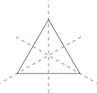
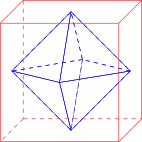

\(\RequirePackage{etex} \makeatletter \ifx \nauthor\undefined \def\nauthor{Dexter Chua} \else \fi \author{Based on lectures by \nlecturer \\\small Notes taken by \nauthor} \date{\nterm\ \nyear} \usepackage{alltt} \usepackage{amsfonts} \usepackage{amsmath} \usepackage{amssymb} \usepackage{amsthm} \usepackage{booktabs} \usepackage{caption} \usepackage{enumitem} \usepackage{fancyhdr} \usepackage{graphicx} \usepackage{mathdots} \usepackage{mathtools} \usepackage{microtype} \usepackage{multirow} \usepackage{pdflscape} \usepackage{pgfplots} \usepackage{siunitx} \usepackage{textcomp} \usepackage{slashed} \usepackage{tabularx} \usepackage{tikz} \usepackage{tkz-euclide} \usepackage[normalem]{ulem} \usepackage[all]{xy} \usepackage{imakeidx} \makeindex[intoc, title=Index] \indexsetup{othercode={\lhead{\emph{Index}}}} \ifx \nextra \undefined \usepackage[hidelinks, pdfauthor={Dexter Chua}, pdfsubject={Cambridge Maths Notes: Part \npart\ - \ncourse}, pdftitle={Part \npart\ - \ncourse}, pdfkeywords={Cambridge Mathematics Maths Math \npart\ \nterm\ \nyear\ \ncourse}]{hyperref} \title{Part \npart\ --- \ncourse} \else \usepackage[hidelinks, pdfauthor={Dexter Chua}, pdfsubject={Cambridge Maths Notes: Part \npart\ - \ncourse\ (\nextra)}, pdftitle={Part \npart\ - \ncourse\ (\nextra)}, pdfkeywords={Cambridge Mathematics Maths Math \npart\ \nterm\ \nyear\ \ncourse\ \nextra}]{hyperref} \title{Part \npart\ --- \ncourse \\ {\Large \nextra}} \renewcommand\printindex{} \fi \pgfplotsset{compat=1.12} \pagestyle{fancyplain} \ifx \ncoursehead \undefined \def\ncoursehead{\ncourse} \fi \lhead{\emph{\nouppercase{\leftmark}}} \ifx \nextra \undefined \rhead{ \ifnum\thepage=1 \else \npart\ \ncoursehead \fi} \else \rhead{ \ifnum\thepage=1 \else \npart\ \ncoursehead \ (\nextra) \fi} \fi \usetikzlibrary{arrows.meta} \usetikzlibrary{decorations.markings} \usetikzlibrary{decorations.pathmorphing} \usetikzlibrary{positioning} \usetikzlibrary{fadings} \usetikzlibrary{intersections} \usetikzlibrary{cd} \newcommand*{\Cdot}{{\raisebox{-0.25ex}{\scalebox{1.5}{$\cdot$}}}} \newcommand {\pd}[2][ ]{ \ifx #1 { } \frac{\partial}{\partial #2} \else \frac{\partial^{#1}}{\partial #2^{#1}} \fi } \ifx \nhtml \undefined \else \renewcommand\printindex{} \DisableLigatures[f]{family = *} \let\Contentsline\contentsline \renewcommand\contentsline[3]{\Contentsline{#1}{#2}{}} \renewcommand{\@dotsep}{10000} \newlength\currentparindent \setlength\currentparindent\parindent \newcommand\@minipagerestore{\setlength{\parindent}{\currentparindent}} \usepackage[active,tightpage,pdftex]{preview} \renewcommand{\PreviewBorder}{0.1cm} \newenvironment{stretchpage}% {\begin{preview}\begin{minipage}{\hsize}}% {\end{minipage}\end{preview}} \AtBeginDocument{\begin{stretchpage}} \AtEndDocument{\end{stretchpage}} \newcommand{\@@newpage}{\end{stretchpage}\begin{stretchpage}} \let\@real@section\section \renewcommand{\section}{\@@newpage\@real@section} \let\@real@subsection\subsection \renewcommand{\subsection}{\@ifstar{\@real@subsection*}{\@@newpage\@real@subsection}} \fi \ifx \ntrim \undefined \else \usepackage{geometry} \geometry{ papersize={379pt, 699pt}, textwidth=345pt, textheight=596pt, left=17pt, top=54pt, right=17pt } \fi \ifx \nisofficial \undefined \let\@real@maketitle\maketitle \renewcommand{\maketitle}{\@real@maketitle\begin{center}\begin{minipage}[c]{0.9\textwidth}\centering\footnotesize These notes are not endorsed by the lecturers, and I have modified them (often significantly) after lectures. They are nowhere near accurate representations of what was actually lectured, and in particular, all errors are almost surely mine.\end{minipage}\end{center}} \else \fi % Theorems \theoremstyle{definition} \newtheorem*{aim}{Aim} \newtheorem*{axiom}{Axiom} \newtheorem*{claim}{Claim} \newtheorem*{cor}{Corollary} \newtheorem*{conjecture}{Conjecture} \newtheorem*{defi}{Definition} \newtheorem*{eg}{Example} \newtheorem*{ex}{Exercise} \newtheorem*{fact}{Fact} \newtheorem*{law}{Law} \newtheorem*{lemma}{Lemma} \newtheorem*{notation}{Notation} \newtheorem*{prop}{Proposition} \newtheorem*{question}{Question} \newtheorem*{problem}{Problem} \newtheorem*{rrule}{Rule} \newtheorem*{thm}{Theorem} \newtheorem*{assumption}{Assumption} \newtheorem*{remark}{Remark} \newtheorem*{warning}{Warning} \newtheorem*{exercise}{Exercise} \newtheorem{nthm}{Theorem}[section] \newtheorem{nlemma}[nthm]{Lemma} \newtheorem{nprop}[nthm]{Proposition} \newtheorem{ncor}[nthm]{Corollary} \renewcommand{\labelitemi}{--} \renewcommand{\labelitemii}{$\circ$} \renewcommand{\labelenumi}{(\roman{*})} \let\stdsection\section \renewcommand\section{\newpage\stdsection} % Strike through \def\st{\bgroup \ULdepth=-.55ex \ULset} %%%%%%%%%%%%%%%%%%%%%%%%% %%%%% Maths Symbols %%%%% %%%%%%%%%%%%%%%%%%%%%%%%% \let\U\relax \let\C\relax \let\G\relax % Matrix groups \newcommand{\GL}{\mathrm{GL}} \newcommand{\Or}{\mathrm{O}} \newcommand{\PGL}{\mathrm{PGL}} \newcommand{\PSL}{\mathrm{PSL}} \newcommand{\PSO}{\mathrm{PSO}} \newcommand{\PSU}{\mathrm{PSU}} \newcommand{\SL}{\mathrm{SL}} \newcommand{\SO}{\mathrm{SO}} \newcommand{\Spin}{\mathrm{Spin}} \newcommand{\Sp}{\mathrm{Sp}} \newcommand{\SU}{\mathrm{SU}} \newcommand{\U}{\mathrm{U}} \newcommand{\Mat}{\mathrm{Mat}} % Matrix algebras \newcommand{\gl}{\mathfrak{gl}} \newcommand{\ort}{\mathfrak{o}} \newcommand{\so}{\mathfrak{so}} \newcommand{\su}{\mathfrak{su}} \newcommand{\uu}{\mathfrak{u}} \renewcommand{\sl}{\mathfrak{sl}} % Special sets \newcommand{\C}{\mathbb{C}} \newcommand{\CP}{\mathbb{CP}} \newcommand{\GG}{\mathbb{G}} \newcommand{\N}{\mathbb{N}} \newcommand{\Q}{\mathbb{Q}} \newcommand{\R}{\mathbb{R}} \newcommand{\RP}{\mathbb{RP}} \newcommand{\T}{\mathbb{T}} \newcommand{\Z}{\mathbb{Z}} \renewcommand{\H}{\mathbb{H}} % Brackets \newcommand{\abs}[1]{\left\lvert #1\right\rvert} \newcommand{\bket}[1]{\left\lvert #1\right\rangle} \newcommand{\brak}[1]{\left\langle #1 \right\rvert} \newcommand{\braket}[2]{\left\langle #1\middle\vert #2 \right\rangle} \newcommand{\bra}{\langle} \newcommand{\ket}{\rangle} \newcommand{\norm}[1]{\left\lVert #1\right\rVert} \newcommand{\normalorder}[1]{\mathop{:}\nolimits\!#1\!\mathop{:}\nolimits} \newcommand{\tv}[1]{|#1|} \renewcommand{\vec}[1]{\boldsymbol{\mathbf{#1}}} % not-math \newcommand{\bolds}[1]{{\bfseries #1}} \newcommand{\cat}[1]{\mathsf{#1}} \newcommand{\ph}{\,\cdot\,} \newcommand{\term}[1]{\emph{#1}\index{#1}} \newcommand{\phantomeq}{\hphantom{{}={}}} % Probability \DeclareMathOperator{\Bernoulli}{Bernoulli} \DeclareMathOperator{\betaD}{beta} \DeclareMathOperator{\bias}{bias} \DeclareMathOperator{\binomial}{binomial} \DeclareMathOperator{\corr}{corr} \DeclareMathOperator{\cov}{cov} \DeclareMathOperator{\gammaD}{gamma} \DeclareMathOperator{\mse}{mse} \DeclareMathOperator{\multinomial}{multinomial} \DeclareMathOperator{\Poisson}{Poisson} \DeclareMathOperator{\var}{var} \newcommand{\E}{\mathbb{E}} \newcommand{\Prob}{\mathbb{P}} % Algebra \DeclareMathOperator{\adj}{adj} \DeclareMathOperator{\Ann}{Ann} \DeclareMathOperator{\Aut}{Aut} \DeclareMathOperator{\Char}{char} \DeclareMathOperator{\disc}{disc} \DeclareMathOperator{\dom}{dom} \DeclareMathOperator{\fix}{fix} \DeclareMathOperator{\Hom}{Hom} \DeclareMathOperator{\id}{id} \DeclareMathOperator{\image}{image} \DeclareMathOperator{\im}{im} \DeclareMathOperator{\re}{re} \DeclareMathOperator{\tr}{tr} \DeclareMathOperator{\Tr}{Tr} \newcommand{\Bilin}{\mathrm{Bilin}} \newcommand{\Frob}{\mathrm{Frob}} % Others \newcommand\ad{\mathrm{ad}} \newcommand\Art{\mathrm{Art}} \newcommand{\B}{\mathcal{B}} \newcommand{\cU}{\mathcal{U}} \newcommand{\Der}{\mathrm{Der}} \newcommand{\D}{\mathrm{D}} \newcommand{\dR}{\mathrm{dR}} \newcommand{\exterior}{\mathchoice{{\textstyle\bigwedge}}{{\bigwedge}}{{\textstyle\wedge}}{{\scriptstyle\wedge}}} \newcommand{\F}{\mathbb{F}} \newcommand{\G}{\mathcal{G}} \newcommand{\Gr}{\mathrm{Gr}} \newcommand{\haut}{\mathrm{ht}} \newcommand{\Hol}{\mathrm{Hol}} \newcommand{\hol}{\mathfrak{hol}} \newcommand{\Id}{\mathrm{Id}} \newcommand{\lie}[1]{\mathfrak{#1}} \newcommand{\op}{\mathrm{op}} \newcommand{\Oc}{\mathcal{O}} \newcommand{\pr}{\mathrm{pr}} \newcommand{\Ps}{\mathcal{P}} \newcommand{\pt}{\mathrm{pt}} \newcommand{\qeq}{\mathrel{``{=}"}} \newcommand{\Rs}{\mathcal{R}} \newcommand{\Vect}{\mathrm{Vect}} \newcommand{\wsto}{\stackrel{\mathrm{w}^*}{\to}} \newcommand{\wt}{\mathrm{wt}} \newcommand{\wto}{\stackrel{\mathrm{w}}{\to}} \renewcommand{\d}{\mathrm{d}} \renewcommand{\P}{\mathbb{P}} %\renewcommand{\F}{\mathcal{F}} \let\Im\relax \let\Re\relax \DeclareMathOperator{\area}{area} \DeclareMathOperator{\card}{card} \DeclareMathOperator{\ccl}{ccl} \DeclareMathOperator{\ch}{ch} \DeclareMathOperator{\cl}{cl} \DeclareMathOperator{\cls}{\overline{\mathrm{span}}} \DeclareMathOperator{\coker}{coker} \DeclareMathOperator{\conv}{conv} \DeclareMathOperator{\cosec}{cosec} \DeclareMathOperator{\cosech}{cosech} \DeclareMathOperator{\covol}{covol} \DeclareMathOperator{\diag}{diag} \DeclareMathOperator{\diam}{diam} \DeclareMathOperator{\Diff}{Diff} \DeclareMathOperator{\End}{End} \DeclareMathOperator{\energy}{energy} \DeclareMathOperator{\erfc}{erfc} \DeclareMathOperator{\erf}{erf} \DeclareMathOperator*{\esssup}{ess\,sup} \DeclareMathOperator{\ev}{ev} \DeclareMathOperator{\Ext}{Ext} \DeclareMathOperator{\fst}{fst} \DeclareMathOperator{\Fit}{Fit} \DeclareMathOperator{\Frac}{Frac} \DeclareMathOperator{\Gal}{Gal} \DeclareMathOperator{\gr}{gr} \DeclareMathOperator{\hcf}{hcf} \DeclareMathOperator{\Im}{Im} \DeclareMathOperator{\Ind}{Ind} \DeclareMathOperator{\Int}{Int} \DeclareMathOperator{\Isom}{Isom} \DeclareMathOperator{\lcm}{lcm} \DeclareMathOperator{\length}{length} \DeclareMathOperator{\Lie}{Lie} \DeclareMathOperator{\like}{like} \DeclareMathOperator{\Lk}{Lk} \DeclareMathOperator{\Maps}{Maps} \DeclareMathOperator{\orb}{orb} \DeclareMathOperator{\ord}{ord} \DeclareMathOperator{\otp}{otp} \DeclareMathOperator{\poly}{poly} \DeclareMathOperator{\rank}{rank} \DeclareMathOperator{\rel}{rel} \DeclareMathOperator{\Rad}{Rad} \DeclareMathOperator{\Re}{Re} \DeclareMathOperator*{\res}{res} \DeclareMathOperator{\Res}{Res} \DeclareMathOperator{\Ric}{Ric} \DeclareMathOperator{\rk}{rk} \DeclareMathOperator{\Rees}{Rees} \DeclareMathOperator{\Root}{Root} \DeclareMathOperator{\sech}{sech} \DeclareMathOperator{\sgn}{sgn} \DeclareMathOperator{\snd}{snd} \DeclareMathOperator{\Spec}{Spec} \DeclareMathOperator{\spn}{span} \DeclareMathOperator{\stab}{stab} \DeclareMathOperator{\St}{St} \DeclareMathOperator{\supp}{supp} \DeclareMathOperator{\Syl}{Syl} \DeclareMathOperator{\Sym}{Sym} \DeclareMathOperator{\vol}{vol} \pgfarrowsdeclarecombine{twolatex'}{twolatex'}{latex'}{latex'}{latex'}{latex'} \tikzset{->/.style = {decoration={markings, mark=at position 1 with {\arrow[scale=2]{latex'}}}, postaction={decorate}}} \tikzset{<-/.style = {decoration={markings, mark=at position 0 with {\arrowreversed[scale=2]{latex'}}}, postaction={decorate}}} \tikzset{<->/.style = {decoration={markings, mark=at position 0 with {\arrowreversed[scale=2]{latex'}}, mark=at position 1 with {\arrow[scale=2]{latex'}}}, postaction={decorate}}} \tikzset{->-/.style = {decoration={markings, mark=at position #1 with {\arrow[scale=2]{latex'}}}, postaction={decorate}}} \tikzset{-<-/.style = {decoration={markings, mark=at position #1 with {\arrowreversed[scale=2]{latex'}}}, postaction={decorate}}} \tikzset{->>/.style = {decoration={markings, mark=at position 1 with {\arrow[scale=2]{latex'}}}, postaction={decorate}}} \tikzset{<<-/.style = {decoration={markings, mark=at position 0 with {\arrowreversed[scale=2]{twolatex'}}}, postaction={decorate}}} \tikzset{<<->>/.style = {decoration={markings, mark=at position 0 with {\arrowreversed[scale=2]{twolatex'}}, mark=at position 1 with {\arrow[scale=2]{twolatex'}}}, postaction={decorate}}} \tikzset{->>-/.style = {decoration={markings, mark=at position #1 with {\arrow[scale=2]{twolatex'}}}, postaction={decorate}}} \tikzset{-<<-/.style = {decoration={markings, mark=at position #1 with {\arrowreversed[scale=2]{twolatex'}}}, postaction={decorate}}} \tikzset{circ/.style = {fill, circle, inner sep = 0, minimum size = 3}} \tikzset{scirc/.style = {fill, circle, inner sep = 0, minimum size = 1.5}} \tikzset{mstate/.style={circle, draw, blue, text=black, minimum width=0.7cm}} \tikzset{eqpic/.style={baseline={([yshift=-.5ex]current bounding box.center)}}} \tikzset{commutative diagrams/.cd,cdmap/.style={/tikz/column 1/.append style={anchor=base east},/tikz/column 2/.append style={anchor=base west},row sep=tiny}} \definecolor{mblue}{rgb}{0.2, 0.3, 0.8} \definecolor{morange}{rgb}{1, 0.5, 0} \definecolor{mgreen}{rgb}{0.1, 0.4, 0.2} \definecolor{mred}{rgb}{0.5, 0, 0} \def\drawcirculararc(#1,#2)(#3,#4)(#5,#6){% \pgfmathsetmacro\cA{(#1*#1+#2*#2-#3*#3-#4*#4)/2}% \pgfmathsetmacro\cB{(#1*#1+#2*#2-#5*#5-#6*#6)/2}% \pgfmathsetmacro\cy{(\cB*(#1-#3)-\cA*(#1-#5))/% ((#2-#6)*(#1-#3)-(#2-#4)*(#1-#5))}% \pgfmathsetmacro\cx{(\cA-\cy*(#2-#4))/(#1-#3)}% \pgfmathsetmacro\cr{sqrt((#1-\cx)*(#1-\cx)+(#2-\cy)*(#2-\cy))}% \pgfmathsetmacro\cA{atan2(#2-\cy,#1-\cx)}% \pgfmathsetmacro\cB{atan2(#6-\cy,#5-\cx)}% \pgfmathparse{\cB<\cA}% \ifnum\pgfmathresult=1 \pgfmathsetmacro\cB{\cB+360}% \fi \draw (#1,#2) arc (\cA:\cB:\cr);% } \newcommand\getCoord[3]{\newdimen{#1}\newdimen{#2}\pgfextractx{#1}{\pgfpointanchor{#3}{center}}\pgfextracty{#2}{\pgfpointanchor{#3}{center}}} \newcommand\qedshift{\vspace{-17pt}} \newcommand\fakeqed{\pushQED{\qed}\qedhere} \def\Xint#1{\mathchoice {\XXint\displaystyle\textstyle{#1}}% {\XXint\textstyle\scriptstyle{#1}}% {\XXint\scriptstyle\scriptscriptstyle{#1}}% {\XXint\scriptscriptstyle\scriptscriptstyle{#1}}% \!\int} \def\XXint#1#2#3{{\setbox0=\hbox{$#1{#2#3}{\int}$} \vcenter{\hbox{$#2#3$}}\kern-.5\wd0}} \def\ddashint{\Xint=} \def\dashint{\Xint-} \newcommand\separator{{\centering\rule{2cm}{0.2pt}\vspace{2pt}\par}} \newenvironment{own}{\color{gray!70!black}}{} \newcommand\makecenter[1]{\raisebox{-0.5\height}{#1}} \mathchardef\mdash="2D \newenvironment{significant}{\begin{center}\begin{minipage}{0.9\textwidth}\centering\em}{\end{minipage}\end{center}} \DeclareRobustCommand{\rvdots}{% \vbox{ \baselineskip4\p@\lineskiplimit\z@ \kern-\p@ \hbox{.}\hbox{.}\hbox{.} }} \DeclareRobustCommand\tph[3]{{\texorpdfstring{#1}{#2}}} \makeatother \)
Lagrange’s theorem
Cosets. Lagrange’s theorem. Groups of small order (up to order 8). Quaternions.
Fermat-Euler theorem from the group-theoretic point of view. [5]
Group actions
Group actions; orbits and stabilizers. Orbit-stabilizer theorem. Cayley’s theorem (every
group is isomorphic to a subgroup of a permutation group). Conjugacy classes. Cauchy’s
theorem. [4]
Quotient groups
Normal subgroups, quotient groups and the isomorphism theorem. [4]
Matrix groups
The general and special linear groups; relation with the Möbius group. The orthogonal and
special orthogonal groups. Proof (in \(\R ^3\)) that every element of the orthogonal group is the
product of reflections and every rotation in \(\R ^3\) has an axis. Basis change as an example of
conjugation. [3]
Permutations
Permutations, cycles and transpositions. The sign of a permutation. Conjugacy in \(S_n\) and in \(A_n\).
Simple groups; simplicity of \(A_5\). [4]
Group theory is an example of algebra. In pure mathematics, algebra (usually) does not refer to the boring mindless manipulation of symbols. Instead, in algebra, we have some set of objects with some operations on them. For example, we can take the integers with addition as the operation. However, in algebra, we allow any set and any operations, not just numbers.
Of course, such a definition is too broad to be helpful. We categorize algebraic structures into different types. In this course, we will study a particular kind of structures, groups. In the IB Groups, Rings and Modules course, we will study rings and modules as well.
These different kinds of structures are defined by certain axioms. The group axioms will say that the operation must follow certain rules, and any set and operation that satisfies these rules will be considered to form a group. We will then have a different set of axioms for rings, modules etc.
As mentioned above, the most familiar kinds of algebraic structures are number systems such as integers and rational numbers. The focus of group theory, however, is not on things that resemble “numbers”. Instead, it is the study of symmetries.
First of all, what is a symmetry? We are all familiar with, say, the symmetries of an (equilateral) triangle (we will always assume the triangle is equilateral). We rotate a triangle by \(120^\circ \), and we get the original triangle. We say that rotating by \(120^\circ \) is a symmetry of a triangle. In general, a symmetry is something we do to an object that leaves the object intact.
Of course, we don’t require that the symmetry leaves everything intact. Otherwise, we would only be allowed to do nothing. Instead, we require certain important things to be intact. For example, when considering the symmetries of a triangle, we only care about how the resultant object looks, but don’t care about where the individual vertices went.
In the case of the triangle, we have six symmetries: three rotations (rotation by \(0^\circ , 120^\circ \) and \(240^\circ \)), and three reflections along the axes below:

These six together form the underlying set of the group of symmetries. A more sophisticated example is the symmetries of \(\R ^3\). We define these as operations on \(\R ^3\) that leave distances between points unchanged. These include translations, rotations, reflections, and combinations of these.
So what is the operation? This operation combines two symmetries to give a new symmetry. The natural thing to do is to do the symmetry one after another. For example, if we combine the two \(120^\circ \) rotations, we get a \(240^\circ \) rotation.
Now we are studying algebra, not geometry. So to define the group, we abstract away the triangle. Instead, we define the group to be six objects, say \(\{e, r, r^2, s, rs, r^2s\}\), with rules defining how we combine two elements to get a third. Officially, we do not mention the triangle at all when defining the group.
We can now come up with the group axioms. What rules should the set of symmetries obey? First of all, we must have a “do nothing” symmetry. We call this the identity element. When we compose the identity with another symmetry, the other symmetry is unchanged.
Secondly, given a symmetry, we can do the reverse symmetry. So for any element, there is an inverse element that, when combined with the original, gives the identity.
Finally, given three symmetries, we can combine them, one after another. If we denote the operation of the group as \(*\), then if we have three symmetries, \(x, y, z\), we should be able to form \(x*y*z\). If we want to define it in terms of the binary operation \(*\), we can define it as \((x*y)*z\), where we first combine the first two symmetries, then combine the result with the third. Alternatively, we can also define it as \(x*(y*z)\). Intuitively, these two should give the same result, since both are applying \(x\) after \(y\) after \(z\). Hence we have the third rule \(x*(y*z) = (x*y)*z\).
Now a group is any set with an operation that satisfies the three rules above. In group theory, the objective is to study the properties of groups just assuming these three axioms. It turns out that there is a lot we can talk about.
Definition (Binary operation). A (binary) operation is a way of combining two elements to get a new element. Formally, it is a map \(*: A \times A \rightarrow A\).
Definition (Group). A group is a set \(G\) with a binary operation \(*\) satisfying the following axioms:
Definition (Order of group). The order of the group, denoted by \(|G|\), is the number of elements in \(G\). A group is a finite group if the order is finite.
Note that technically, the inverse axiom makes no sense, since we have not specified what \(e\) is. Even if we take it to be the \(e\) given by the identity axiom, the identity axiom only states there is some \(e\) that satisfies that property, but there could be many! We don’t know which one \(a * a^{-1}\) is supposed to be equal to! So we should technically take that to mean there is some \(a^{-1}\) such that \(a*a^{-1}\) and \(a^{-1} * a\) satisfy the identity axiom. Of course, we will soon show that identities are indeed unique, and we will happily talk about “the” identity.
Some people put a zeroth axiom called “closure”:
Technically speaking, this axiom also makes no sense — when we say \(*\) is a binary operation, by definition, \(a * b\) must be a member of \(G\). However, in practice, we often have to check that this axiom actually holds. For example, if we let \(G\) be the set of all matrices of the form \[ \begin {pmatrix} 1 & x & y\\ 0 & 1 & z\\ 0 & 0 & 1 \end {pmatrix} \] under matrix multiplication, we will have to check that the product of two such matrices is indeed a matrix of this form. Officially, we are checking that the binary operation is a well-defined operation on \(G\).
It is important to know that it is generally not true that \(a*b = b*a\). There is no a priori reason why this should be true. For example, if we are considering the symmetries of a triangle, rotating and then reflecting is different from reflecting and then rotating.
However, for some groups, this happens to be true. We call such groups abelian groups.
Definition (Abelian group). A group is abelian if it satisfies
If it is clear from context, we are lazy and leave out the operation \(*\), and write \(a*b\) as \(ab\). We also write \(a^2 = aa\), \(a^n = \underbrace {aaa\cdots a}_{n \text { copies}}\), \(a^0 = e\), \(a^{-n} = (a^{-1})^n\) etc.
Example. The following are abelian groups:
The following are non-abelian groups:
Recall that the first group axiom requires that there exists an identity element, which we shall call \(e\). Then the second requires that for each \(a\), there is an inverse \(a^{-1}\) such that \(a^{-1}a = e\). This only makes sense if there is only one identity \(e\), or else which identity should \(a^{-1}a\) be equal to?
We shall now show that there can only be one identity. It turns out that the inverses are also unique. So we will talk about the identity and the inverse.
Proposition. Let \((G, *)\) be a group. Then
Proof.
Proposition. Let \((G, *)\) be a group and \(a, b\in G\). Then
Proof.
Similarly, \((b^{-1}a^{-1})ab = e\). So \(b^{-1}a^{-1}\) is an inverse of \(ab\). By the uniqueness of inverses, \((ab)^{-1} = b^{-1}a^{-1}\). □
Sometimes if we have a group \(G\), we might want to discard some of the elements. For example if \(G\) is the group of all symmetries of a triangle, we might one day decide that we hate reflections because they reverse orientation. So we only pick the rotations in \(G\) and form a new, smaller group. We call this a subgroup of \(G\).
Definition (Subgroup). A \(H\) is a subgroup of \(G\), written \(H\leq G\), if \(H\subseteq G\) and \(H\) with the restricted operation \(*\) from \(G\) is also a group.
Example.
\((\Z , +)\leq (\Q , +) \leq (\R , +)\leq (\C , +)\)
\(({e}, *) \leq (G, *)\) (trivial subgroup)
\(G \leq G\)
\((\{\pm 1\}, \times ) \leq (\Q ^*, \times )\)
According to the definition, to prove that \(H\) is a subgroup of \(G\), we need to make sure \(H\) satisfies all group axioms. However, this is often tedious. Instead, there are some simplified criteria to decide whether \(H\) is a subgroup.
Lemma (Subgroup criteria I). Let \((G, *)\) be a group and \(H\subseteq G\). \(H \leq G\) iff
Proof. The group axioms are satisfied as follows:
Humans are lazy, and the test above is still too complicated. We thus come up with an even simpler test:
Lemma (Subgroup criteria II). A subset \(H\subseteq G\) is a subgroup of \(G\) iff:
Proof. (I) and (II) follow trivially from (i), (ii) and (iii).
To prove that (I) and (II) imply (i), (ii) and (iii), we have
Proposition. The subgroups of \((\Z , +)\) are exactly \(n\Z \), for \(n\in \N \) (\(n\Z \) is the integer multiples of \(n\)).
Proof. Firstly, it is trivial to show that for any \(n \in \N \), \(n\Z \) is a subgroup. Now show that any subgroup must be in the form \(n\Z \).
Let \(H\leq \Z \). We know \(0\in H\). If there are no other elements in \(H\), then \(H = 0\Z \). Otherwise, pick the smallest positive integer \(n\) in \(H\). Then \(H=n\Z \).
Otherwise, suppose \((\exists a\in H)\,n \nmid a\). Let \(a = pn + q\), where \(0 < q < n\). Since \(a - pn\in H\), \(q\in H\). Yet \(q < n\) but \(n\) is the smallest member of \(H\). Contradiction. So every \(a\in H\) is divisible by \(n\). Also, by closure, all multiples of \(n\) must be in \(H\). So \(H = n\Z \). □
It is often helpful to study functions between different groups. First, we need to define what a function is. These definitions should be familiar from IA Numbers and Sets.
Definition (Function). Given two sets \(X\), \(Y\), a function \(f: X \rightarrow Y\) sends each \(x\in X\) to a particular \(f(x)\in Y\). \(X\) is called the domain and \(Y\) is the co-domain.
Example.
Identity function: for any set \(X\), \(1_X: X \rightarrow X\) with \(1_X(x) = x\) is a function. This is also written as \(\mathrm {id}_X\).
Inclusion map: \(\iota : \Z \rightarrow \Q \): \(\iota (n) = n\). Note that this differs from the identity function as the domain and codomain are different in the inclusion map.
\(f_1: \Z \rightarrow \Z \): \(f_1(x) = x + 1\).
\(f_2: \Z \rightarrow \Z \): \(f_2(x) = 2x\).
\(f_3: \Z \rightarrow \Z \): \(f_3(x) = x^2\).
For \(g: \{0, 1, 2, 3, 4\} \rightarrow \{0, 1, 2, 3, 4\}\), we have:
\(g_1(x) = x + 1\) if \(x < 4\); \(g_1(4) = 4\).
\(g_2(x) = x + 1\) if \(x < 4\); \(g_1(4) = 0\).
Definition (Composition of functions). The composition of two functions is a function you get by applying one after another. In particular, if \(f: X \rightarrow Y\) and \(G: Y\rightarrow Z\), then \(g\circ f: X \rightarrow Z\) with \(g\circ f(x) = g(f(x))\).
Example. \(f_2\circ f_1(x) = 2x + 2\). \(f_1\circ f_2 (x) = 2x + 1\). Note that function composition is not commutative.
Definition (Injective functions). A function \(f\) is injective if it hits everything at most once, i.e. \[ (\forall x, y\in X)\,f(x) = f(y)\Rightarrow x = y. \]
Definition (Surjective functions). A function is surjective if it hits everything at least once, i.e. \[ (\forall y\in Y)(\exists x\in X)\,f(x) = y. \]
Definition (Bijective functions). A function is bijective if it is both injective and surjective. i.e. it hits everything exactly once. Note that a function has an inverse iff it is bijective.
Example. \(\iota \) and \(f_2\) are injective but not subjective. \(f_3\) and \(g_1\) are neither. \(1_X\), \(f_1\) and \(g_2\) are bijective.
Lemma. The composition of two bijective functions is bijective
When considering sets, functions are allowed to do all sorts of crazy things, and can send any element to any element without any restrictions. However, we are currently studying groups, and groups have additional structure on top of the set of elements. Hence we are not interested in arbitrary functions. Instead, we are interested in functions that “respect” the group structure. We call these homomorphisms.
Definition (Group homomorphism). Let \((G, *)\) and \((H, \times )\) be groups. A function \(f:G\rightarrow H\) is a group homomorphism iff \[ ( \forall g_1, g_2 \in G)\, f(g_1)\times f(g_2) = f(g_1 * g_2), \]
Definition (Group isomorphism). Isomorphisms are bijective homomorphisms. Two groups are isomorphic if there exists an isomorphism between them. We write \(G\cong H\).
We will consider two isomorphic groups to be “the same”. For example, when we say that there is only one group of order \(2\), it means that any two groups of order \(2\) must be isomorphic.
Example.
\(f: G \to H\) defined by \(f(g) = e\), where \(e\) is the identity of \(H\), is a homomorphism.
\(1_G: G \rightarrow G\) and \(f_2: \Z \rightarrow 2\Z \) are isomorphisms. \(\iota : \Z \rightarrow \Q \) and \(f_2:\Z \rightarrow \Z \) are homomorphisms.
\(\mathrm {exp}: (\R , +) \rightarrow (\R ^+, \times )\) with \(\mathrm {exp}(x) = e^x\) is an isomorphism.
Take \((\Z _4, +)\) and \(H: (\{e^{ik\pi /2}:k=0, 1 ,2, 3\}, \times )\). Then \(f: \Z _4 \rightarrow H\) by \(f(a) = e^{i\pi a/2}\) is an isomorphism.
\(f: \GL _2(\R ) \rightarrow \R ^*\) with \(f(A) = \det (A)\) is a homomorphism, where \(\GL _2(\R )\) is the set of \(2\times 2\) invertible matrices.
Proposition. Suppose that \(f: G\rightarrow H\) is a homomorphism. Then
Proof.
Since inverses are unique, \(f(a^{-1}) = f(a)^{-1}\).
So \(f^{-1}\) is a homomorphism. Since it is bijective, \(f^{-1}\) is an isomorphism. □
Definition (Image of homomorphism). If \(f:G\rightarrow H\) is a homomorphism, then the image of \(f\) is \[ \im f = f(G) = \{f(g):g\in G\}. \]
Definition (Kernel of homomorphism). The kernel of \(f\), written as \[ \ker f = f^{-1}(\{e_H\}) = \{g\in G:f(g)=e_H\}. \]
Proposition. Both the image and the kernel are subgroups of the respective groups, i.e. \(\im f\leq H\) and \(\ker f \leq G\).
Proof. Since \(e_H\in \im f\) and \(e_G\in \ker f\), \(\im f\) and \(\ker f\) are non-empty. Moreover, suppose \(b_1, b_2\in \im f\). Now \(\exists a_1, a_2 \in G\) such that \(f(a_i) = b_i\). Then \(b_1b_2^{-1} = f(a_1)f(a_2^{-1}) = f(a_1a_2^{-1})\in \im f\).
Then consider \(b_1,b_2\in \ker f\). We have \(f(b_1b_2^{-1}) = f(b_1)f(b_2)^{-1} = e^2 = e\). So \(b_1b_2^{-1}\in \ker f\). □
Proposition. Given any homomorphism \(f:G\rightarrow H\) and any \(a\in G\), for all \(k\in \ker f\), \(aka^{-1}\in \ker f\).
This proposition seems rather pointless. However, it is not. All subgroups that satisfy this property are known as normal subgroups, and normal subgroups have very important properties. We will postpone the discussion of normal subgroups to later lectures.
Proof. \(f(aka^{-1}) = f(a)f(k)f(a)^{-1} = f(a)ef(a)^{-1} = e\). So \(aka^{-1}\in \ker f\). □
Example. Images and kernels for previously defined functions:
Proposition. For all homomorphisms \(f:G\rightarrow H\), \(f\) is
Proof.
So far, the definitions of images and kernels seem to be just convenient terminology to refer to things. However, we will later prove an important theorem, the first isomorphism theorem, that relates these two objects and provides deep insights (hopefully).
Before we get to that, we will first study some interesting classes of groups and develop some necessary theory.
The simplest class of groups is cyclic groups. A cyclic group is a group of the form \(\{e, a, a^2, a^2, \cdots , a^{n - 1}\}\), where \(a^n = e\). For example, if we consider the group of all rotations of a triangle, and write \(r = \) rotation by \(120^\circ \), the elements will be \(\{e, r, r^2\}\) with \(r^3 = e\).
Officially, we define a cyclic group as follows:
Definition (Cyclic group \(C_n\)). A group \(G\) is cyclic if \[ (\exists a)(\forall b)(\exists n\in \Z )\, b = a^n, \] i.e. every element is some power of \(a\). Such an \(a\) is called a generator of \(G\).
We write \(C_n\) for the cyclic group of order \(n\).
Example.
Notation. Given a group \(G\) and \(a\in G\), we write \(\bra a\ket \) for the cyclic group generated by \(a\), i.e. the subgroup of all powers of \(a\). It is the smallest subgroup containing \(a\).
Definition (Order of element). The order of an element \(a\) is the smallest integer \(n\) such that \(a^n = e\). If \(n\) doesn’t exist, \(a\) has infinite order. Write \(\ord (a)\) for the order of \(a\).
We have given two different meanings to the word “order”. One is the order of a group and the other is the order of an element. Since mathematicians are usually (but not always) sensible, the name wouldn’t be used twice if they weren’t related. In fact, we have
Lemma. For \(a\) in \(g\), \(\ord (a) = |\bra a\ket |\).
Proof. If \(\ord (a) = \infty \), \(a^n \not = a^m\) for all \(n\not = m\). Otherwise \(a^{m-n} = e\). Thus \(|\bra a\ket | = \infty = \ord (a)\).
Otherwise, suppose \(\ord (a) = k\). Thus \(a^k = e\). We now claim that \(\bra a\ket = \{e, a^1, a^2, \cdots a^{k-1}\}\). Note that \(\bra a\ket \) does not contain higher powers of \(a\) as \(a^k = e\) and higher powers will loop back to existing elements. There are also no repeating elements in the list provided since \(a^m = a^n \Rightarrow a^{m-n} = e\). So done. □
It is trivial to show that
Proposition. Cyclic groups are abelian.
Definition (Exponent of group). The exponent of a group \(G\) is the smallest integer \(n\) such that \(a^n = e\) for all \(a \in G\).
Definition (Dihedral groups \(D_{2n}\)). Dihedral groups are the symmetries of a regular \(n\)-gon. It contains \(n\) rotations (including the identity symmetry, i.e. rotation by \(0^\circ \)) and \(n\) reflections.
We write the group as \(D_{2n}\). Note that the subscript refers to the order of the group, not the number of sides of the polygon.
The dihedral group is not hard to define. However, we need to come up with a presentation of \(D_{2n}\) that is easy to work with.
We first look at the rotations. The set of all rotations is generated by \(r = \frac {360^\circ }{n}\). This \(r\) has order \(n\).
How about the reflections? We know that each reflection has order \(2\). Let \(s\) be our favorite reflection. Then using some geometric arguments, we can show that any reflection can be written as a product of \(r^m\) and \(s\) for some \(m\). We also have \(srs = r^{-1}\).
Hence we can define \(D_{2n}\) as follows: \(D_{2n}\) is a group generated by \(r\) and \(s\), and every element can be written as a product of \(r\)’s and \(s\)’s. Whenever we see \(r^n\) and \(s^2\), we replace it by \(e\). When we see \(srs\), we replace it by \(r^{-1}\).
It then follows that every element can be written in the form \(r^m s\).
Formally, we can write \(D_{2n}\) as follows: \begin {align*} D_{2n} &= \bra r, s\mid r^n=s^2=e, srs^{-1} = r^{-1}\ket \\ &= \{e, r, r^2, \cdots r^{n-1}, s, rs, r^2s, \cdots r^{n-1}s\} \end {align*}
This is a notation we will commonly use to represent groups. For example, a cyclic group of order \(n\) can be written as \[ C_n = \bra a\mid a^n =e \ket . \]
Recall that if we have to sets \(X, Y\), then we can obtain the product \(X\times Y = \{(x, y): x\in X, y\in Y\}\). We can do the same if \(X\) and \(Y\) are groups.
Definition (Direct product of groups). Given two groups \((G, \circ )\) and \((H, \bullet )\), we can define a set \(G\times H = \{(g, h): g\in G, h\in H\}\) and an operation \((a_1, a_2)*(b_1, b_2) = (a_1\circ b_1, a_2\bullet b_2)\). This forms a group.
Why would we want to take the product of two groups? Suppose we have two independent triangles. Then the symmetries of this system include, say rotating the first triangle, rotating the second, or rotating both. The symmetry group of this combined system would then be \(D_6 \times D_6\).
Example. \begin {align*} C_2\times C_2 &= \{(0, 0), (0, 1), (1, 0), (1, 1)\}\\ &= \{e, x, y, xy\} \text { with everything order 2}\\ &= \bra x, y\mid x^2=y^2=e, xy = yx\ket \end {align*}
Proposition. \(C_n\times C_m\cong C_{nm}\) iff \(\hcf (m, n) = 1\).
Proof. Suppose that \(\hcf (m, n) = 1\). Let \(C_n = \bra a\ket \) and \(C_m = \bra b \ket \). Let \(k\) be the order of \((a, b)\). Then \((a, b)^k = (a^k, b^k) = e\). This is possible only if \(n \mid k\) and \(m \mid k\), i.e. \(k\) is a common multiple \(n\) and \(m\). Since the order is the minimum value of \(k\) that satisfies the above equation, \(k = \lcm (n, m) = \frac {nm}{\hcf (n, m)} = nm\).
Now consider \(\bra (a, b)\ket \leq C_n\times C_m\). Since \((a, b)\) has order \(nm\), \(\bra (a, b)\ket \) has \(nm\) elements. Since \(C_n\times C_m\) also has \(nm\) elements, \(\bra (a, b)\ket \) must be the whole of \(C_n\times C_m\). And we know that \(\bra (a, b)\ket \cong C_{nm}\). So \(C_n\times C_m \cong C_{nm}\).
On the other hand, suppose \(\hcf (m, n) \not = 1\). Then \(k = \lcm (m, n) \not = mn\). Then for any \((a, b)\in C_n \times C_m\),we have \((a, b)^k = (a^k, b^k) = e\). So the order of any \((a, b)\) is at most \(k < mn\). So there is no element of order \(mn\). So \(C_n\times C_m\) is not a cyclic group of order \(nm\). □
Given a complicated group \(G\), it is sometimes helpful to write it as a product \(H\times K\), which could make things a bit simpler. We can do so by the following theorem:
Proposition (Direct product theorem). Let \(H_1, H_2\leq G\). Suppose the following are true:
Then \(G\cong H_1\times H_2\).
Proof. Define \(f:H_1\times H_2\rightarrow G\) by \(f(a_1, a_2) = a_1a_2\). Then it is a homomorphism since \begin {align*} f((a_1, a_2)*(b_1,b_2)) &= f(a_1b_1, a_2b_2)\\ &= a_1b_1a_2b_2\\ &= a_1a_2b_1b_2\\ &= f(a_1, a_2)f(b_1,b_2). \end {align*}
Surjectivity follows from (iii). We’ll show injectivity by showing that the kernel is \(\{e\}\). If \(f(a_1, a_2)=e\), then we know that \(a_1a_2 = e\). Then \(a_1=a_2^{-1}\). Since \(a_1 \in H_1\) and \(a_2^{-1} \in H_2\), we have \(a_1 = a_2^{-1} \in H_1\cap H_2 = \{e\}\). Thus \(a_1 = a_2 = e\) and \(\ker f = \{e\}\). □
We will devote two full chapters to the study of symmetric groups, because it is really important. Recall that we defined a symmetry to be an operation that leaves some important property of the object intact. We can treat each such operation as a bijection. For example, a symmetry of \(\R ^2\) is a bijection \(f: \R ^2 \to \R ^2\) that preserves distances. Note that we must require it to be a bijection, instead of a mere function, since we require each symmetry to be an inverse.
We can consider the case where we don’t care about anything at all. So a “symmetry” would be any arbitrary bijection \(X \to X\), and the set of all bijections will form a group, known as the symmetric group. Of course, we will no longer think of these as “symmetries” anymore, but just bijections.
In some sense, the symmetric group is the most general case of a symmetry group. In fact, we will later (in Chapter 5) show that every group can be written as a subgroup of some symmetric group.
Definition (Permutation). A permutation of \(X\) is a bijection from a set \(X\) to \(X\) itself. The set of all permutations on \(X\) is \(\Sym X\).
When composing permutations, we treat them as functions. So if \(\sigma \) and \(\rho \) are permutations, \(\sigma \circ \rho \) is given by first applying \(\rho \), then applying \(\sigma \).
Theorem. \(\Sym X\) with composition forms a group.
Proof. The groups axioms are satisfied as follows:
Definition (Symmetric group \(S_n\)). If \(X\) is finite, say \(|X| = n\) (usually use \(X = \{1, 2, \cdots , n\}\)), we write \(\Sym X = S_n\). The is the symmetric group of degree \(n\).
It is important to note that the degree of the symmetric group is different from the order of the symmetric group. For example, \(S_3\) has degree 3 but order 6. In general, the order of \(S_n\) is \(n!\).
There are two ways to write out an element of the symmetric group. The first is the two row notation.
Notation. (Two row notation) We write \(1, 2, 3, \cdots n\) on the top line and their images below, e.g. \[ \begin {pmatrix} 1 & 2 & 3\\ 2 & 3 & 1 \end {pmatrix}\in S_3 \text { and } \begin {pmatrix} 1 & 2 & 3 & 4 & 5\\ 2 & 1 & 3 & 4 & 5 \end {pmatrix}\in S_5 \] In general, if \(\sigma : X\to X\), we write \[ \begin {pmatrix} 1 & 2 & 3 &\cdots& n\\ \sigma (1) & \sigma (2)&\sigma (3) &\cdots& \sigma {(n)} \end {pmatrix} \]
Example. For small \(n\), we have
In general, we can view \(D_{2n}\) as a subgroup of \(S_n\) because each symmetry is a permutation of the corners.
While the two row notation is fully general and can represent any (finite) permutation, it is clumsy to write and wastes a lot of space. It is also very annoying to type using LaTeX. Hence, most of the time, we actually use the cycle notation.
Notation (Cycle notation). If a map sends \(1 \mapsto 2\), \(2\mapsto 3\), \(3\mapsto 1\), then we write it as a cycle \((1\;2\;3)\). Alternatively, we can write \((2\;3\;1)\) or \((3\;1\;2)\), but by convention, we usually write the smallest number first. We leave out numbers that don’t move. So we write \((1\; 2)\) instead of \((1\; 2)(3)\).
For more complicated maps, we can write them as products of cycles. For example, in \(S_4\), we can have things like \((1\; 2)(3\; 4)\).
The order of each cycle is the length of the cycle, and the inverse is the cycle written the other way round, e.g. \((1\; 2\; 3)^{-1} = (3\; 2\; 1) = (1\; 3\; 2)\).
Example.
Definition (\(k\)-cycles and transpositions). We call \((a_1\; a_2\; a_3\cdots a_k)\) a \(k\)-cycle. \(2\)-cycles are called transpositions. Two cycles are disjoint if no number appears in both cycles.
Example. \((1\; 2)\) and \((3\; 4)\) are disjoint but \((1\; 2\; 3)\) and \((1\; 2)\) are not.
Lemma. Disjoint cycles commute.
Proof. If \(\sigma , \tau \in S_n\) are disjoint cycles. Consider any \(n\). Show that: \(\sigma (\tau (a)) = \tau (\sigma (a))\). If \(a\) is in neither of \(\sigma \) and \(\tau \), then \(\sigma (\tau (a)) = \tau (\sigma (a)) = a\). Otherwise, wlog assume that \(a\) is in \(\tau \) but not in \(\sigma \). Then \(\tau (a)\in \tau \) and thus \(\tau (a)\not \in \sigma \). Thus \(\sigma (a) = a\) and \(\sigma (\tau (a)) = \tau (a)\). Therefore we have \(\sigma (\tau (a)) = \tau (\sigma (a)) = \tau (a)\). Therefore \(\tau \) and \(\sigma \) commute. □
In general, non-disjoint cycles may not commute. For example, \((1\; 3)(2\; 3) = (1\; 3\; 2)\) while \((2\; 3)(1\; 3) = (1\; 2\; 3)\).
Theorem. Any permutation in \(S_n\) can be written (essentially) uniquely as a product of disjoint cycles. (Essentially unique means unique up to re-ordering of cycles and rotation within cycles, e.g. \((1\; 2)\) and \((2\; 1)\))
Proof. Let \(\sigma \in S_n\). Start with \((1\; \sigma (1)\; \sigma ^2(1)\; \sigma ^3(1)\;\cdots )\). As the set \(\{1, 2, 3\cdots n\}\) is finite, for some \(k\), we must have \(\sigma ^k(1)\) already in the list. If \(\sigma ^k(1) = \sigma ^l(1)\), with \(l < k\), then \(\sigma ^{k-l}(1) = 1\). So all \(\sigma ^i(1)\) are distinct until we get back to \(1\). Thus we have the first cycle \((1\; \sigma (1)\; \sigma ^2(1)\; \sigma ^3(1)\;\cdots \;\sigma ^{k-1}(1))\).
Now choose the smallest number that is not yet in a cycle, say \(j\). Repeat to obtain a cycle \((j\; \sigma (j)\; \sigma ^2(j)\;\cdots \; \sigma ^{l - 1}(j))\). Since \(\sigma \) is a bijection, nothing in this cycle can be in previous cycles as well.
Repeat until all \(\{1, 2, 3\cdots n\}\) are exhausted. This is essentially unique because every number \(j\) completely determines the whole cycle it belongs to, and whichever number we start with, we’ll end up with the same cycle. □
Definition (Cycle type). Write a permutation \(\sigma \in S_n\) in disjoint cycle notation. The cycle type is the list of cycle lengths. This is unique up to re-ordering. We often (but not always) leave out singleton cycles.
Example. \((1\; 2)\) has cycle type \(2\) (transposition). \((1\; 2)(3\; 4)\) has cycle type \(2, 2\) (double transposition). \((1\; 2\; 3)(4\; 5)\) has cycle type \(3, 2\).
Lemma. For \(\sigma \in S_n\), the order of \(\sigma \) is the least common multiple of cycle lengths in the disjoint cycle notation. In particular, a \(k\)-cycle has order \(k\).
Proof. As disjoint cycles commute, we can group together each cycle when we take powers. i.e. if \(\sigma = \tau _1\tau _2\cdots \tau _l\) with \(\tau _i\) all disjoint cycles, then \(\sigma ^m = \tau _1^m\tau _2^m\cdots \tau _l^m\).
Now if cycle \(\tau _i\) has length \(k_i\), then \(\tau _i^{k_i} = e\), and \(\tau _i^m = e\) iff \(k_i \mid m\). To get an \(m\) such that \(\sigma ^m = e\), we need all \(k_i\) to divide \(m\). i.e. \(m\) is a common multiple of \(k_i\). Since the order is the least possible \(m\) such that \(\sigma ^m = e\), the order is the least common multiple of \(k_i\). □
Example. Any transpositions and double transpositions have order 2.
\((1\; 2\; 3)(4\; 5)\) has order 6.
To classify different permutations, we can group different permutations according to their cycle type. While this is a very useful thing to do, it is a rather fine division. In this section, we will assign a “sign” to each permutation, and each permutation can either be odd or even. This high-level classification allows us to separate permutations into two sets, which is also a useful notion.
To define the sign, we first need to write permutations as products of transpositions.
Proposition. Every permutation is a product of transpositions.
This is not a deep or mysterious fact. All it says is that you can rearrange things however you want just by swapping two objects at a time.
Proof. As each permutation is a product of disjoint cycles, it suffices to prove that each cycle is a product of transpositions. Consider a cycle \((a_1\; a_2\; a_3\; \cdots \; a_k)\). This is in fact equal to \((a_1\; a_2)(a_2\; a_3)\cdots (a_{k-1}\; a_k)\). Thus a \(k\)-cycle can be written as a product of \(k - 1\) transpositions. □
Note that the product is not unique. For example, \[ (1\; 2\; 3\; 4\; 5) =(1\; 2)(2\; 3)(3\; 4)(4\; 5) = (1\; 2)(2\; 3)(1\; 2)(3\; 4)(1\; 2)(4\; 5). \] However, the number of terms in the product, mod 2, is always the same.
Theorem. Writing \(\sigma \in S_n\) as a product of transpositions in different ways, \(\sigma \) is either always composed of an even number of transpositions, or always an odd number of transpositions.
The proof is rather magical.
Proof. Write \(\#(\sigma )\) for the number of cycles in disjoint cycle notation, including singleton cycles. So \(\#(e) = n\) and \(\#((1\; 2)) = n - 1\). When we multiply \(\sigma \) by a transposition \(\tau = (c\; d)\) (wlog assume \(c < d\)),
If \(c, d\) are in the same \(\sigma \)-cycle, say, \((c\; a_2\; \cdots \; a_{k - 1}\; d\; a_{k + 1}\; \cdots a_{k + l})(c\; d) = (c\; a_{k+1}\; a_{k+2}\;\cdots a_{k + l})(d\; a_2\; a_3\;\cdots \; a_{k - 1})\). So \(\#(\sigma \tau ) = \#(\sigma ) + 1\) .
If \(c, d\) are in different \(\sigma \)-cycles, say
\((d\; a_2\; a_3\;\cdots \;a_{k - 1})(c\; a_{k + 1}\; a_{k + 2}\;\cdots \; a_{k + l})(c\; d) \)
\(=(c\; a_2\; \cdots \; a_{k - 1}\; d\; a_{k + 1}\; \cdots a_{k + l})(c\; d)(c\; d)\)
\(= (c\; a_2\; \cdots \; a_{k - 1}\; d\; a_{k + 1}\; \cdots a_{k + l})\) and \(\#(\sigma \tau ) = \#(\sigma ) - 1\).
Therefore for any transposition \(\tau \), \(\#(\sigma \tau ) \equiv \#(\sigma ) + 1 \pmod 2\).
Now suppose \(\sigma = \tau _1\cdots \tau _l = \tau _1'\cdots \tau _{k}'\). Since disjoint cycle notation is unique, \(\#(\sigma )\) is uniquely determined by \(\sigma \).
Now we can construct \(\sigma \) by starting with \(e\) and multiplying the transpositions one by one. Each time we add a transposition, we increase \(\#(\sigma )\) by \(1 \pmod 2\). So \(\#(\sigma ) \equiv \#(e) + l\pmod 2\). Similarly, \(\#(\sigma ) \equiv \#(e) + k \pmod 2\). So \(l \equiv k \pmod 2\). □
Definition (Sign of permutation). Viewing \(\sigma \in S_n\) as a product of transpositions, \(\sigma = \tau _1\cdots \tau _l\), we call \(\sgn (\sigma ) = (-1)^l\). If \(\sgn (\sigma ) = 1\), we call \(\sigma \) an even permutation. If \(\sgn (\sigma ) = -1\), we call \(\sigma \) an odd permutation.
While \(l\) itself is not well-defined, it is either always odd or always even, and \((-1)^l\) is well-defined.
Theorem. For \(n\geq 2\), \(\sgn : S_n \rightarrow \{\pm 1\}\) is a surjective group homomorphism.
Proof. Suppose \(\sigma _1 = \tau _1\cdots \tau _{l_1}\) and \(\sigma _2 = \tau '_1\cdots \tau _{l_2}\). Then \(\sgn (\sigma _1\sigma _2) = (-1)^{l_1 + l_2} = (-1)^{l_1}(-1)^{l_2} = \sgn (\sigma _1)\sgn (\sigma _2)\). So it is a homomorphism.
It is surjective since \(\sgn (e) = 1\) and \(\sgn ((1\; 2)) = -1\). □
It is this was rather trivial to prove. The hard bit is showing that \(\sgn \) is well defined. If a question asks you to show that \(\sgn \) is a well-defined group homomorphism, you have to show that it is well-defined.
Lemma. \(\sigma \) is an even permutation iff the number of cycles of even length is even.
Proof. A \(k\)-cycle can be written as \(k - 1\) transpositions. Thus an even-length cycle is odd, vice versa.
Since \(\sgn \) is a group homomorphism, writing \(\sigma \) in disjoint cycle notation, \(\sigma = \sigma _1\sigma _2\cdots \sigma _l\), we get \(\sgn (\sigma ) = \sgn (\sigma _1)\cdots \sgn (\sigma _l)\). Suppose there are \(m\) even-length cycles and \(n\) odd-length cycles, then \(\sgn (\sigma ) = (-1)^m 1^n\). This is equal to \(1\) iff \((-1)^m = 1\), i.e. \(m\) is even. □
Rather confusingly, odd length cycles are even, and even length cycles are odd.
Definition (Alternating group \(A_n\)). The alternating group \(A_n\) is the kernel of \(\sgn \), i.e. the even permutations. Since \(A_n\) is a kernel of a group homomorphism, \(A_n \leq S_n\).
Among the many uses of the \(\sgn \) homomorphism, it is used in the definition of the determinant of a matrix: if \(A_{n\times n}\) is a square matrix, then \[ \det A = \sum _{\sigma \in S_n}\sgn (\sigma ) a_{1\sigma (1)}\cdots a_{n\sigma (n)}. \]
Proposition. Any subgroup of \(S_n\) contains either no odd permutations or exactly half.
Proof. If \(S_n\) has at least one odd permutation \(\tau \), then there exists a bijection between the odd and even permutations by \(\sigma \mapsto \sigma \tau \) (bijection since \(\sigma \mapsto \sigma \tau ^{-1}\) is a well-defined inverse). So there are as many odd permutations as even permutations. □
After we prove the isomorphism theorem later, we can provide an even shorter proof of this.
One can model a Rubik’s cube with a group, with each possible move corresponding to a group element. Of course, Rubik’s cubes of different sizes correspond to different groups.
Suppose I have a \(4\times 4\times 4\) Rubik’s cube, but I want to practice solving a \(2\times 2\times 2\) Rubik’s cube. It is easy. I just have to make sure every time I make a move, I move two layers together. Then I can pretend I am solving a \(2\times 2\times 2\) cube. This corresponds to picking a particular subgroup of the \(4\times 4\times 4\) group.
Now what if I have a \(3\times 3\times 3\) cube? I can still practice solving a \(2\times 2\times 2\) one. This time, I just look at the corners and pretend that the edges and centers do not exist. Then I am satisfied when the corners are in the right positions, while the centers and edges can be completely scrambled. In this case, we are not taking a subgroup. Instead, we are identifying certain moves together. In particular, we are treating two moves as the same as long as their difference is confined to the centers and edges.
Let \(G\) be the \(3\times 3\times 3\) cube group, and \(H\) be the subgroup of \(G\) that only permutes the edges and centers. Then for any \(a, b\in G\), we think \(a\) and \(b\) are “the same” if \(a^{-1}b \in H\). Then the set of things equivalent to \(a\) is \(aH = \{ah: h \in H\}\). We call this a coset, and the set of cosets form a group.
An immediate question one can ask is: why not \(Ha = \{ha: h\in H\}\)? In this particular case, the two happen to be the same for all possible \(a\). However, for a general subgroup \(H\), they need not be. We can still define the coset \(aH = \{ah: h \in H\}\), but these are less interesting. For example, the set of all \(\{aH\}\) will no longer form a group. We will look into these more in-depth in the next chapter. In this chapter, we will first look at results for general cosets. In particular, we will, step by step, prove the things we casually claimed above.
Definition (Cosets). Let \(H\leq G\) and \(a\in G\). Then the set \(aH =\{ah : h\in H\}\) is a left coset of \(H\) and \(Ha = \{ha : h\in H\}\) is a right coset of \(H\).
Example.
Proposition. \(aH = bH \Leftrightarrow b^{-1}a\in H\).
Proof. \((\Rightarrow )\) Since \(a\in aH\), \(a\in bH\). Then \(a = bh\) for some \(h\in H\). So \(b^{-1}a = h\in H\).
\((\Leftarrow )\). Let \(b^{-1}a = h_0\). Then \(a = bh_0\). Then \(\forall ah\in aH\), we have \(ah = b(h_0h)\in bH\). So \(aH \subseteq bH\). Similarly, \(bH\subseteq aH\). So \(aH = bH\). □
Definition (Partition). Let \(X\) be a set, and \(X_1, \cdots X_n\) be subsets of \(X\). The \(X_i\) are called a partition of \(X\) if \(\bigcup X_i = X\) and \(X_i\cap X_j = \emptyset \) for \(i\not = j\). i.e. every element is in exactly one of \(X_i\).
Lemma. The left cosets of a subgroup \(H\leq G\) partition \(G\), and every coset has the same size.
Proof. For each \(a\in G\), \(a\in aH\). Thus the union of all cosets gives all of \(G\). Now we have to show that for all \(a, b\in G\), the cosets \(aH\) and \(bH\) are either the same or disjoint.
Suppose that \(aH\) and \(bH\) are not disjoint. Let \(ah_1 = bh_2 \in aH \cap bH\). Then \(b^{-1}a = h_2 h_1^{-1}\in H\). So \(aH = bH\).
To show that they each coset has the same size, note that \(f: H \to aH\) with \(f(h) = ah\) is invertible with inverse \(f^{-1}(h) = a^{-1}h\). Thus there exists a bijection between them and they have the same size. □
Definition (Index of a subgroup). The index of \(H\) in \(G\), written \(|G:H|\), is the number of left cosets of \(H\) in \(G\).
Theorem (Lagrange’s theorem). If \(G\) is a finite group and \(H\) is a subgroup of \(G\), then \(|H|\) divides \(|G|\). In particular, \[ |H||G:H| = |G|. \]
Note that the converse is not true. If \(k\) divides \(|G|\), there is not necessarily a subgroup of order \(k\), e.g. \(|A_4| = 12\) but there is no subgroup of order \(6\). However, we will later see that this is true if \(k\) is a prime (cf. Cauchy’s theorem).
Proof. Suppose that there are \(|G: H|\) left cosets in total. Since the left cosets partition \(G\), and each coset has size \(|H|\), we have \[ |H||G:H| = |G|.\qedhere \] □
Again, the hard part of this proof is to prove that the left cosets partition \(G\) and have the same size. If you are asked to prove Lagrange’s theorem in exams, that is what you actually have to prove.
Corollary. The order of an element divides the order of the group, i.e. for any finite group \(G\) and \(a\in G\), \(\ord (a)\) divides \(|G|\).
Proof. Consider the subgroup generated by \(a\), which has order \(\ord (a)\). Then by Lagrange’s theorem, \(\ord (a)\) divides \(|G|\). □
Corollary. The exponent of a group divides the order of the group, i.e. for any finite group \(G\) and \(a\in G\), \(a^{|G|} = e\).
Proof. We know that \(|G| = k\ord (a)\) for some \(k\in \N \). Then \(a^{|G|} = (a^{\ord (a)})^k = e^k = e\). □
Corollary. Groups of prime order are cyclic and are generated by every non-identity element.
Proof. Say \(|G| = p\). If \(a\in G\) is not the identity, the subgroup generated by \(a\) must have order \(p\) since it has to divide \(p\). Thus the subgroup generated by \(a\) has the same size as \(G\) and they must be equal. Then \(G\) must be cyclic since it is equal to the subgroup generated by \(a\). □
A useful way to think about cosets is to view them as equivalence classes. To do so, we need to first define what an equivalence class is.
Definition (Equivalence relation). An equivalence relation \(\sim \) is a relation that is reflexive, symmetric and transitive. i.e.
Example. The following relations are equivalence relations:
Definition (Equivalence class). Given an equivalence relation \(\sim \) on \(A\), the equivalence class of \(a\) is \[ [a]_{\sim } = [a] = \{b\in A: a\sim b\} \]
Proposition. The equivalence classes form a partition of \(A\).
Proof. By reflexivity, we have \(a\in [a]\). Thus the equivalence classes cover the whole set. We must now show that for all \(a, b\in A\), either \([a] = [b]\) or \([a]\cap [b]=\emptyset \).
Suppose \([a]\cap [b]\not =\emptyset \). Then \(\exists c\in [a]\cap [b]\). So \(a\sim c, b\sim c\). By symmetry, \(c\sim b\). By transitivity, we have \(a\sim b\). Now for all \(b'\in [b]\), we have \(b\sim b'\). Thus by transitivity, we have \(a\sim b'\). Thus \([b]\subseteq [a]\). Similarly, \([a]\subseteq [b]\) and \([a] = [b]\). □
Lemma. Given a group \(G\) and a subgroup \(H\), define the equivalence relation on \(G\) with \(a\sim b\) iff \(b^{-1}a\in H\). The equivalence classes are the left cosets of \(H\).
Proof. First show that it is an equivalence relation.
To show that the equivalence classes are the cosets, we have \(a\sim b\Leftrightarrow b^{-1}a\in H \Leftrightarrow aH = bH\). □
Example. Consider \((\Z , +)\), and for fixed \(n\), take the subgroup \(n\Z \). The cosets are \(0+ H, 1 + H, \cdots (n - 1)+H\). We can write these as \([0], [1], [2] \cdots [n]\). To perform arithmetic “mod \(n\)”, define \([a] + [b] = [a + b]\), and \([a][b] = [ab]\). We need to check that it is well-defined, i.e. it doesn’t depend on the choice of the representative of \([a]\).
If \([a_1] = [a_2]\) and \([b_1] = [b_2]\), then \(a_1 = a_2 + kn\) and \(b_1 = b_2 + kn\), then \(a_1 + b_1 = a_2 + b_2 + n(k + l)\) and \(a_1b_1 = a_2b_2 + n(kb_2 +la_2 + kln)\). So \([a_1 + b_1] = [a_2 + b_2]\) and \([a_1b_1] = [a_2b_2]\).
We have seen that \((\Z _n, +_n)\) is a group. What happens with multiplication? We can only take elements which have inverses (these are called units, cf. IB Groups, Rings and Modules). Call the set of them \(U_n = \{[a]: (a, n) = 1\}\). We’ll see these are the units.
Definition (Euler totient function). (Euler totient function) \(\phi (n) = |U_n|\).
Example. If \(p\) is a prime, \(\phi (n) = p - 1\). \(\phi (4) = 2\).
Proposition. \(U_n\) is a group under multiplication mod \(n\).
Proof. The operation is well-defined as shown above. To check the axioms:
Theorem (Fermat-Euler theorem). Let \(n\in N\) and \(a\in \Z \) coprime to \(n\). Then \[ a^{\phi (n)} \equiv 1\pmod n. \] In particular, (Fermat’s Little Theorem) if \(n = p\) is a prime, then for any \(a\) not a multiple of \(p\). \[ a^{p - 1}\equiv 1\pmod p. \]
Proof. As \(a\) is coprime with \(n\), \([a]\in U_n\). Then \([a]^{|U_n|} = [1]\), i.e. \(a^{\phi (n)} \equiv 1\pmod n\). □
We will study the structures of certain small groups.
Example (Using Lagrange theorem to find subgroups). To find subgroups of \(D_{10}\), we know that the subgroups must have size 1, 2, 5 or 10:
As for \(D_8\), subgroups must have order 1, 2, 4 or 8.
Proposition. Any group of order 4 is either isomorphic to \(C_4\) or \(C_2\times C_2\).
Proof. Let \(|G| = 4\). By Lagrange theorem, possible element orders are \(1\) (\(e\) only), \(2\) and \(4\). If there is an element \(a\in G\) of order \(4\), then \(G = \bra a\ket \cong C_4\).
Otherwise all non-identity elements have order 2. Then \(G\) must be abelian (For any \(a, b\), \((ab)^2 = 1 \Rightarrow ab = (ab)^{-1} \Rightarrow ab = b^{-1}a^{-1} \Rightarrow ab = ba\)). Pick \(2\) elements of order 2, say \(b, c\in G\), then \(\bra b\ket =\{e, b\}\) and \(\bra c\ket = \{e, c\}\). So \(\bra b\ket \cap \bra c\ket = \{e\}\). As \(G\) is abelian, \(\bra b\ket \) and \(\bra c\ket \) commute. We know that \(bc = cb\) has order 2 as well, and is the only element of \(G\) left. So \(G \cong \bra b\ket \times \bra c\ket \cong C_2\times C_2\) by the direct product theorem. □
Proposition. A group of order \(6\) is either cyclic or dihedral (i.e. is isomorphic to \(C_6\) or \(D_6\)). (See proof in next section)
As \(|aH| = |H|\) and similarly \(|H| = |Ha|\), left and right cosets have the same size. Are they necessarily the same? We’ve previously shown that they might not be the same. In some other cases, they are.
Example.
This distinction will become useful in the next chapter.
In the previous section, when attempting to pretend that a \(3\times 3\times 3\) Rubik’s cube is a \(2\times 2\times 2\) one, we came up with the cosets \(aH\), and claimed that these form a group. We also said that this is not the case for arbitrary subgroup \(H\), but only for subgroups that satisfy \(aH = Ha\). Before we prove these, we first study these subgroups a bit.
Definition (Normal subgroup). A subgroup \(K\) of \(G\) is a normal subgroup if \[ (\forall a\in G)(\forall k\in K)\,aka^{-1}\in K. \] We write \(K\lhd G\). This is equivalent to:
From the example last time, \(H=\bra s\ket \leq D_6\) is not a normal subgroup, but \(K=\bra r\ket \lhd D_6\). We know that every group \(G\) has at least two normal subgroups \(\{e\}\) and \(G\).
Lemma.
Proof.
Proposition. Every kernel is a normal subgroup.
Proof. Given homomorphism \(f:G\rightarrow H\) and some \(a\in G\), for all \(k\in \ker f\), we have \(f(aka^{-1}) = f(a)f(k)f(a)^{-1} = f(a)ef(a)^{-1} = e\). Therefore \(aka^{-1}\in \ker f\) by definition of the kernel. □
In fact, we will see in the next section that all normal subgroups are kernels of some homomorphism.
Example. Consider \(G = D_8\). Let \(K = \bra r^2\ket \) is normal. Check: Any element of \(G\) is either \(sr^\ell \) or \(r^\ell \) for some \(\ell \). Clearly \(e\) satisfies \(aka^{-1}\in K\). Now check \(r^2\): For the case of \(sr^\ell \), we have \(sr^\ell r^2(sr^\ell )^{-1} = sr^\ell r^2 r^{-\ell }s^{-1} = sr^2 s = ssr^{-2} = r^2\). For the case of \(r^\ell \), \(r^\ell r^2r^{-\ell } = r^2\).
Proposition. A group of order \(6\) is either cyclic or dihedral (i.e. \(\cong C_6\) or \(D_6\)).
Proof. Let \(|G| = 6\). By Lagrange theorem, possible element orders are \(1, 2, 3\) and \(6\). If there is an \(a\in G\) of order \(6\), then \(G = \bra a\ket \cong C_6\). Otherwise, we can only have elements of orders \(2\) and \(3\) other than the identity. If \(G\) only has elements of order 2, the order must be a power of 2 by Sheet 1 Q. 8, which is not the case. So there must be an element \(r\) of order 3. So \(\bra r\ket \lhd G\) as it has index \(2\). Now \(G\) must also have an element \(s\) of order \(2\) by Sheet 1 Q. 9.
Since \(\bra r\ket \) is normal, we know that \(srs^{-1}\in \bra r\ket \). If \(srs^{-1} = e\), then \(r = e\), which is not true. If \(srs^{-1} = r\), then \(sr = rs\) and \(sr\) has order \(6\) (lcm of the orders of \(s\) and \(r\)), which was ruled out above. Otherwise if \(srs^{-1} = r^2 = r^{-1}\), then \(G\) is dihedral by definition of the dihedral group. □
Proposition. Let \(K\lhd G\). Then the set of (left) cosets of \(K\) in \(G\) is a group under the operation \(aK*bK = (ab)K\).
Proof. First show that the operation is well-defined. If \(aK = a'K\) and \(bK = b'K\), we want to show that \(aK*bK = a'K * b'K\). We know that \(a' = ak_1\) and \(b' = bk_2\) for some \(k_1, k_2\in K\). Then \(a'b' = ak_1bk_2\). We know that \(b^{-1}k_1b\in K\). Let \(b^{-1}k_1b = k_3\). Then \(k_1 b = bk_3\). So \(a'b' = abk_3k_2\in (ab)K\). So picking a different representative of the coset gives the same product.
Definition (Quotient group). Given a group \(G\) and a normal subgroup \(K\), the quotient group or factor group of \(G\) by \(K\), written as \(G/K\), is the set of (left) cosets of \(K\) in \(G\) under the operation \(aK*bK = (ab)K\).
Note that the set of left cosets also exists for non-normal subgroups (abnormal subgroups?), but the group operation above is not well defined.
Example.
Note that if \(G\) is abelian, \(G/K\) is also abelian.
Note that quotient groups are not subgroups of \(G\). They contain different kinds of elements. For example, \(\Z /n\Z \cong C_n\) are finite, but all subgroups of \(\Z \) infinite.
Example. (Non-example) Consider \(D_6\) with \(H = \bra s\ket \). \(H\) is not a normal subgroup. We have \(rH * r^2 H = r^3 H = H\), but \(rH = rsH\) and \(r^2H = srH\) (by considering the individual elements). So we have \(rsH * srH = r^2 H\not = H\), and the operation is not well-defined.
Lemma. Given \(K\lhd G\), the quotient map \(q: G\rightarrow G/K\) with \(g\mapsto gK\) is a surjective group homomorphism.
Proof. \(q(ab) = (ab)K = aKbK = q(a)q(b)\). So \(q\) is a group homomorphism. Also for all \(aK \in G/K\), \(q(a) = aK\). So it is surjective. □
Note that the kernel of the quotient map is \(K\) itself. So any normal subgroup is a kernel of some homomorphism.
Proposition. The quotient of a cyclic group is cyclic.
Proof. Let \(G = C_n\) with \(H\leq C_n\). We know that \(H\) is also cyclic. Say \(C_n = \bra c\ket \) and \(H = \bra c^k \ket \cong C_\ell \), where \(k\ell = n\). We have \(C_n/H = \{H, cH, c^2H, \cdots c^{k - 1}H\}=\bra cH\ket \cong C_k\). □
Now we come to the Really Important TheoremTM.
Theorem (The Isomorphism Theorem). Let \(f:G\to H\) be a group homomorphism with kernel \(K\). Then \(K\lhd G\) and \(G/K\cong \im f\).
Proof. We have proved that \(K\lhd G\) before. We define a group homomorphism \(\theta : G/K\to \im f\) by \(\theta (aK) = f(a)\).
First check that this is well-defined: If \(a_1K = a_2K\), then \(a_2^{-1}a_1\in K\). So \[ f(a_2)^{-1}f(a_1) = f(a_2^{-1}a_1) = e. \] So \(f(a_1) = f(a_2)\) and \(\theta (a_1K) = \theta (a_2 K)\).
Now we check that it is a group homomorphism: \[ \theta (aKbK) = \theta (abK) = f(ab) = f(a)f(b) = \theta (aK) \theta (bK). \] To show that it is injective, suppose \(\theta (aK) = \theta (bK)\). Then \(f(a) = f(b)\). Hence \(f(b)^{-1}f(a) = e\). Hence \(b^{-1}a \in K\). So \(aK = bK\).
By definition, \(\theta \) is surjective since \(\im \theta = \im f\). So \(\theta \) gives an isomorphism \(G/K \cong \im f \leq H\). □
If \(f\) is injective, then the kernel is \(\{e\}\), so \(G/K\cong G\) and \(G\) is isomorphic to a subgroup of \(H\). We can think of \(f\) as an inclusion map. If \(f\) is surjective, then \(\im f = H\). In this case, \(G/K \cong H\).
Example.
Lemma. Any cyclic group is isomorphic to either \(\Z \) or \(\Z /(n\Z )\) for some \(n\in \N \).
Proof. Let \(G = \bra c\ket \). Define \(f: \Z \to G\) with \(m\mapsto c^m\). This is a group homomorphism since \(c^{m_1 + m_2} = c^{m_1}c^{m_2}\). \(f\) is surjective since \(G\) is by definition all \(c^m\) for all \(m\). We know that \(\ker f\lhd \Z \). We have three possibilities. Either
Definition (Simple group). A group is simple if it has no non-trivial proper normal subgroup, i.e. only \(\{e\}\) and \(G\) are normal subgroups.
Example. \(C_p\) for prime \(p\) are simple groups since it has no proper subgroups at all, let alone normal ones. \(A_5\) is simple, which we will prove after Chapter 6.
The finite simple groups are the building blocks of all finite groups. All finite simple groups have been classified (The Atlas of Finite Groups). If we have \(K\lhd G\) with \(K\not = G\) or \(\{e\}\), then we can “quotient out” \(G\) into \(G/K\). If \(G/K\) is not simple, repeat. Then we can write \(G\) as an “inverse quotient” of simple groups.
Recall that we came up with groups to model symmetries and permutations. Intuitively, elements of groups are supposed to “do things”. However, as we developed group theory, we abstracted these away and just looked at how elements combine to form new elements. Group actions recapture this idea and make each group element correspond to some function.
Definition (Group action). Let \(X\) be a set and \(G\) be a group. An action of \(G\) on \(X\) is a homomorphism \(\varphi : G \to \Sym X\).
This means that the homomorphism \(\varphi \) turns each element \(g\in G\) into a permutation of \(X\), in a way that respects the group structure.
Instead of writing \(\varphi (g)(x)\), we usually directly write \(g(x)\) or \(gx\).
Alternatively, we can define the group action as follows:
Proposition. Let \(X\) be a set and \(G\) be a group. Then \(\varphi : G \to \Sym X\) is a homomorphism (i.e. an action) iff \(\theta : G\times X \to X\) defined by \(\theta (g, x) = \varphi (g)(x)\) satisfies
This criteria is almost the definition of a homomorphism. However, here we do not explicitly require \(\theta (g, \cdot )\) to be a bijection, but require \(\theta (e, \cdot )\) to be the identity function. This automatically ensures that \(\theta (g, \cdot )\) is a bijection, since when composed with \(\theta (g^{-1}, \cdot )\), it gives \(\theta (e, \cdot )\), which is the identity. So \(\theta (g, \cdot )\) has an inverse. This is usually an easier thing to show.
Example.
Note that different groups can act on the same sets, and the same group can act on different sets.
Definition (Kernel of action). The kernel of an action \(G\) on \(X\) is the kernel of \(\varphi \), i.e. all \(g\) such that \(\varphi (g) = 1_X\).
Note that by the isomorphism theorem, \(\ker \varphi \lhd G\) and \(G/K\) is isomorphic to a subgroup of \(\Sym X\).
Example.
Definition (Faithful action). An action is faithful if the kernel is just \(\{e\}\).
Definition (Orbit of action). Given an action \(G\) on \(X\), the orbit of an element \(x\in X\) is \[ \orb (x) = G(x) = \{y\in X: (\exists g\in G)\,g(x) = y\}. \] Intuitively, it is the elements that \(x\) can possibly get mapped to.
Definition (Stabilizer of action). The stabilizer of \(x\) is \[ \stab (x) = G_x = \{g\in G: g(x) = x\}\subseteq G. \] Intuitively, it is the elements in \(G\) that do not change \(x\).
Lemma. \(\stab (x)\) is a subgroup of \(G\).
Proof. We know that \(e(x) = x\) by definition. So \(\stab (x)\) is non-empty. Suppose \(g, h\in \stab (x)\), then \(gh^{-1}(x) = g(h^{-1}(x)) = g(x) = x\). So \(gh^{-1}\in \stab (X)\). So \(\stab (x)\) is a subgroup. □
Example.
Definition (Transitive action). An action \(G\) on \(X\) is transitive if \((\forall x)\,\orb (x) = X\), i.e. you can reach any element from any element.
Lemma. The orbits of an action partition \(X\).
Proof. Firstly, \((\forall x)(x\in \orb (x))\) as \(e(x) = x\). So every \(x\) is in some orbit.
Then suppose \(z\in \orb (x)\) and \(z\in \orb (y)\), we have to show that \(\orb (x) = \orb (y)\). We know that \(z = g_1(x)\) and \(z = g_2(y)\) for some \(g_1, g_2\). Then \(g_1(x) = g_2(y)\) and \(y = g_2^{-1}g_1(x)\).
For any \(w = g_3(y)\in \orb (y)\), we have \(w = g_3g_2^{-1}g_1(x)\). So \(w\in \orb (x)\). Thus \(\orb (y) \subseteq \orb (x)\) and similarly \(\orb (x) \subseteq \orb (y)\). Therefore \(\orb (x) = \orb (y)\). □
Suppose a group \(G\) acts on \(X\). We fix an \(x \in X\). Then by definition of the orbit, given any \(g \in G\), we have \(g(x) \in \orb (x)\). So each \(g \in G\) gives us a member of \(\orb (x)\). Conversely, every object in \(\orb (x)\) arises this way, by definition of \(\orb (x)\). However, different elements in \(G\) can give us the same orbit. In particular, if \(g \in \stab (x)\), then \(hg\) and \(h\) give us the same object in \(\orb (x)\), since \(hg(x) = h(g(x)) = h(x)\). So we have a correspondence between things in \(\orb (x)\) and members of \(G\), “up to \(\stab (x)\)”.
Theorem (Orbit-stabilizer theorem). Let the group \(G\) act on \(X\). Then there is a bijection between \(\orb (x)\) and cosets of \(\stab (x)\) in \(G\). In particular, if \(G\) is finite, then \[ |\orb (x)||\stab (x)| = |G|. \]
Proof. We biject the cosets of \(\stab (x)\) with elements in the orbit of \(x\). Recall that \(G: \stab (x)\) is the set of cosets of \(\stab (x)\). We can define \begin {align*} \theta : (G:\stab (x))& \to \orb (x)\\ g\stab (x) &\mapsto g(x). \end {align*}
This is well-defined — if \(g\stab (x) = h\stab (x)\), then \(h = gk\) for some \(k\in \stab (x)\). So \(h(x) = g(k(x)) = g(x)\).
This map is surjective since for any \(y\in \orb (x)\), there is some \(g \in G\) such that \(g(x) = y\), by definition. Then \(\theta (g \stab (x)) = y\). It is injective since if \(g(x) = h(x)\), then \(h^{-1}g(x) = x\). So \(h^{-1}g\in \stab (x)\). So \(g\stab (x) = h\stab (x)\).
Hence the number of cosets is \(|\orb (x)|\). Then the result follows from Lagrange’s theorem. □
An important application of the orbit-stabilizer theorem is determining group sizes. To find the order of the symmetry group of, say, a pyramid, we find something for it to act on, pick a favorite element, and find the orbit and stabilizer sizes.
Example.
Note that if the action is transitive, then all orbits have size \(|X|\) and thus all stabilizers have the same size.
Given any group \(G\), there are a few important actions we can define. In particular, we will define the conjugation action, which is a very important concept on its own. In fact, the whole of the next chapter will be devoted to studying conjugation in the symmetric groups.
First, we will study some less important examples of actions.
Lemma (Left regular action). Any group \(G\) acts on itself by left multiplication. This action is faithful and transitive.
Proof. We have
So it is an action.
To show that it is faithful, we want to know that \([(\forall x\in X)\,gx = x]\Rightarrow g = e\). This follows directly from the uniqueness of identity.
To show that it is transitive, \(\forall x, y\in G\), then \((yx^{-1})(x) = y\). So any \(x\) can be sent to any \(y\). □
Theorem (Cayley’s theorem). Every group is isomorphic to some subgroup of some symmetric group.
Proof. Take the left regular action of \(G\) on itself. This gives a group homomorphism \(\varphi : G\to \Sym G\) with \(\ker \varphi = \{e\}\) as the action is faithful. By the isomorphism theorem, \(G \cong \im \varphi \leq \Sym G\). □
Lemma (Left coset action). Let \(H\leq G\). Then \(G\) acts on the left cosets of \(H\) by left multiplication transitively.
Proof. First show that it is an action:
To show that it is transitive, given \(aH, bH\), we know that \((ba^{-1})(aH) = bH\). So any \(aH\) can be mapped to \(bH\). □
In the boring case where \(H = \{e\}\), then this is just the left regular action since \(G/\{e\} \cong G\).
Definition (Conjugation of element). The conjugation of \(a\in G\) by \(b\in G\) is given by \(bab^{-1}\in G\). Given any \(a, c\), if there exists some \(b\) such that \(c = bab^{-1}\), then we say \(a\) and \(c\) are conjugate.
What is conjugation? This \(bab^{-1}\) form looks familiar from Vectors and Matrices. It is the formula used for changing basis. If \(b\) is the change-of-basis matrix and \(a\) is a matrix, then the matrix in the new basis is given by \(bab^{-1}\). In this case, \(bab^{-1}\) is the same matrix viewed from a different basis.
In general, two conjugate elements are “the same” in some sense. For example, we will later show that in \(S_n\), two elements are conjugate if and only if they have the same cycle type. Conjugate elements in general have many properties in common, such as their order.
Lemma (Conjugation action). Any group \(G\) acts on itself by conjugation (i.e. \(g(x) = gxg^{-1}\)).
Proof. To show that this is an action, we have
Definition (Conjugacy classes and centralizers). The conjugacy classes are the orbits of the conjugacy action. \[ \ccl (a) = \{b\in G: (\exists g\in g)\,gag^{-1} = b\}. \] The centralizers are the stabilizers of this action, i.e. elements that commute with \(a\). \[ C_G(a) = \{g\in G: gag^{-1} = a\} = \{g\in G: ga = ag\}. \]
The centralizer is defined as the elements that commute with a particular element \(a\). For the whole group \(G\), we can define the center.
Definition (Center of group). The center of \(G\) is the elements that commute with all other elements. \[ Z(G) = \{g\in G: (\forall a)\,gag^{-1} = a\} = \{g\in G: (\forall a)\,ga = ag\}. \] It is sometimes written as \(C(G)\) instead of \(Z(G)\).
In many ways, conjugation is related to normal subgroups.
Lemma. Let \(K\lhd G\). Then \(G\) acts by conjugation on \(K\).
Proof. We only have to prove closure as the other properties follow from the conjugation action. However, by definition of a normal subgroup, for every \(g \in G, k \in K\), we have \(gkg^{-1}\in K\). So it is closed. □
Proposition. Normal subgroups are exactly those subgroups which are unions of conjugacy classes.
Proof. Let \(K\lhd G\). If \(k\in K\), then by definition for every \(g \in G\), we get \(gkg^{-1}\in K\). So \(\ccl (k)\subseteq K\). So \(K\) is the union of the conjugacy classes of all its elements.
Conversely, if \(K\) is a union of conjugacy classes and a subgroup of \(G\), then for all \(k \in K, g \in G\), we have \(gkg^{-1}\in K\). So \(K\) is normal. □
Lemma. Let \(X\) be the set of subgroups of \(G\). Then \(G\) acts by conjugation on \(X\).
Proof. To show that it is an action, we have
Under this action, normal subgroups have singleton orbits.
Definition (Normalizer of subgroup). The normalizer of a subgroup is the stabilizer of the (group) conjugation action. \[ N_G(H) = \{g\in G: gHg^{-1} = H\}. \]
We clearly have \(H\subseteq N_G(H)\). It is easy to show that \(N_G(H)\) is the largest subgroup of \(G\) in which \(H\) is a normal subgroup, hence the name.
There is a connection between actions in general and conjugation of subgroups.
Lemma. Stabilizers of the elements in the same orbit are conjugate, i.e. let \(G\) act on \(X\) and let \(g\in G, x\in X\). Then \(\stab (g(x)) = g\stab (x)g^{-1}\).
Example. Let \(G^{+}\) be the rotations of a cube acting on the vertices. Let \(X\) be the set of vertices. Then \(|X| = 8\). Since the action is transitive, the orbit of element is the whole of \(X\). The stabilizer of vertex \(1\) is the set of rotations through \(1\) and the diagonally opposite vertex, of which there are 3. So \(|G^{+}| = |\orb (1)||\stab (1)| = 8\cdot 3 = 24\).
Example. Let \(G\) be a finite simple group of order greater than 2, and \(H\leq G\) have index \(n\not = 1\). Then \(|G| \leq n!/2\).
Proof. Consider the left coset action of \(G\) on \(H\). We get a group homomorphism \(\varphi : G\to S_n\) since there are \(n\) cosets of \(H\). Since \(H\not = G\), \(\varphi \) is non-trivial and \(\ker \varphi \not =G\). Now \(\ker \varphi \lhd G\). Since \(G\) is simple, \(\ker \varphi = \{e\}\). So \(G\cong \im \varphi \subseteq S_n\) by the isomorphism theorem. So \(|G| \leq |S_n| = n!\).
We can further refine this by considering \(\sgn \circ \varphi : G \to \{\pm 1\}\). The kernel of this composite is normal in \(G\). So \(K = \ker (\sgn \circ \phi ) = \{e\}\) or \(G\). Since \(G/K\cong \im (\sgn \circ \phi )\), we know that \(|G|/|K| = 1\) or \(2\) since \(\im (\sgn \circ \phi )\) has at most two elements. Hence for \(|G|> 2\), we cannot have \(K = \{e\}\), or else \(|G|/|K| > 2\). So we must have \(K = G\), so \(\sgn (\varphi (g)) = 1\) for all \(g\) and \(\im \varphi \leq A_n\). So \(|G|\leq n!/2\) □
We have seen on Sheet 1 that if \(|G|\) is even, then \(G\) has an element of order 2. In fact,
Theorem (Cauchy’s Theorem). Let \(G\) be a finite group and prime \(p\) dividing \(|G|\). Then \(G\) has an element of order \(p\) (in fact there must be at least \(p - 1\) elements of order \(p\)).
It is important to remember that this only holds for prime \(p\). For example, \(A_4\) doesn’t have an element of order \(6\) even though \(6 \mid 12 = |A_4|\). The converse, however, holds for any number trivially by Lagrange’s theorem.
Proof. Let \(G\) and \(p\) be fixed. Consider \(G^p = G\times G\times \cdots \times G\), the set of \(p\)-tuples of \(G\). Let \(X \subseteq G^p\) be \(X = \{(a_1, a_2, \cdots , a_p)\in G^p: a_1a_2\cdots a_p = e\}\).
In particular, if an element \(b\) has order \(p\), then \((b, b, \cdots , b)\in X\). In fact, if \((b, b, \cdots , b)\in X\) and \(b\not = e\), then \(b\) has order \(p\), since \(p\) is prime.
Now let \(H = \bra h: h^p = e\ket \cong C_p\) be a cyclic group of order \(p\) with generator \(h\) (This \(h\) is not related to \(G\) in any way). Let \(H\) act on \(X\) by “rotation”: \[ h(a_1, a_2, \cdots , a_p) = (a_2, a_3, \cdots , a_p, a_1) \] This is an action:
As orbits partition \(X\), the sum of all orbit sizes must be \(|X|\). We know that \(|X| = |G|^{p - 1}\) since we can freely choose the first \(p - 1\) entries and the last one must be the inverse of their product. Since \(p\) divides \(|G|\), \(p\) also divides \(|X|\). We have \(|\orb (a_1, \cdots , a_p)||\stab _H(a_1, \cdots , a_p)| = |H| = p\). So all orbits have size 1 or \(p\), and they sum to \(|X| = p\times \) something. We know that there is one orbit of size 1, namely \((e, e, \cdots , e)\). So there must be at least \(p - 1\) other orbits of size 1 for the sum to be divisible by \(p\).
In order to have an orbit of size 1, they must look like \((a, a, \cdots , a)\) for some \(a\in G\), which has order \(p\). □
In this chapter, we will look at conjugacy classes of \(S_n\) and \(A_n\). It turns out this is easy for \(S_n\), since two elements are conjugate if and only if they have the same cycle type. However, it is slightly more complicated in \(A_n\). This is since while \((1\; 2\; 3)\) and \((1\; 3\; 2)\) might be conjugate in \(S_4\), the element needed to perform the conjugation might be odd and not in \(A_n\).
Recall \(\sigma , \tau \in S_n\) are conjugate if \(\exists \rho \in S_n\) such that \(\rho \sigma \rho ^{-1} = \tau \).
We first investigate the special case, when \(\sigma \) is a \(k\)-cycle.
Proposition. If \((a_1\; a_2\; \cdots \; a_k)\) is a \(k\)-cycle and \(\rho \in S_n\), then \(\rho (a_1\; \cdots \; a_k)\rho ^{-1}\) is the \(k\)-cycle \((\rho (a_1)\; \rho (a_2)\; \cdots \rho (a_3))\).
Proof. Consider any \(\rho (a_1)\) acted on by \(\rho (a_1\; \cdots \; a_k)\rho ^{-1}\). The three permutations send it to \(\rho (a_1)\mapsto a_1 \mapsto a_2 \mapsto \rho (a_2)\) and similarly for other \(a_i\)s. Since \(\rho \) is bijective, any \(b\) can be written as \(\rho (a)\) for some \(a\). So the result is the \(k\)-cycle \((\rho (a_1)\; \rho (a_2)\; \cdots \rho (a_3))\). □
Corollary. Two elements in \(S_n\) are conjugate iff they have the same cycle type.
Proof. Suppose \(\sigma = \sigma _1\sigma _2\cdots \sigma _\ell \), where \(\sigma _i\) are disjoint cycles. Then \(\rho \sigma \rho ^{-1} = \rho \sigma _1\rho ^{-1}\rho \sigma _2\rho ^{-1}\cdots \rho \sigma _\ell \rho ^{-1}\). Since the conjugation of a cycle conserves its length, \(\rho \sigma \rho ^{-1}\) has the same cycle type.
Conversely, if \(\sigma , \tau \) have the same cycle type, say \[ \sigma = (a_1\; a_2\;\cdots \; a_k)(a_{k + 1}\; \cdots \;a_{k + \ell }),\quad \tau = (b_1\; b_2\;\cdots \; b_k)(b_{k + 1}\; \cdots \;b_{k + \ell }), \] if we let \(\rho (a_i) = b_i\), then \(\rho \sigma \rho ^{-1} = \tau \). □
Example. Conjugacy classes of \(S_4\):
| Cycle type | Example element | Size of ccl | Size of centralizer | Sign |
| (1, 1, 1, 1) | e | 1 | 24 | \(+1\) |
| (2, 1, 1) | (1 2) | 6 | 4 | \(-1\) |
| (2, 2) | (1 2)(3 4) | 3 | 8 | \(+1\) |
| (3, 1) | (1 2 3) | 8 | 3 | \(+1\) |
| (4) | (1 2 3 4) | 6 | 4 | \(-1\) |
We know that a normal subgroup is a union of conjugacy classes. We can now find all normal subgroups by finding possible union of conjugacy classes whose cardinality divides 24. Note that the normal subgroup must contain \(e\).
We can also obtain the quotients of \(S_4\): \(S_4/\{e\} \cong S_4\), \(S_4/V_4 \cong S_3\cong D_6\), \(S_4/A_4 \cong C_2\), \(S_4/S_4 = \{e\}\).
We have seen that \(|S_n| = 2|A_n|\) and that conjugacy classes in \(S_n\) are “nice”. How about in \(A_n\)?
The first thought is that we write it down: \begin {align*} \ccl _{S_n}(\sigma ) &= \{\tau \in S_n: (\exists \rho \in S_n)\, \tau = \rho \sigma \rho ^{-1}\}\\ \ccl _{A_n}(\sigma ) &= \{\tau \in A_n: (\exists \rho \in A_n)\, \tau = \rho \sigma \rho ^{-1}\} \end {align*}
Obviously \(\ccl _{A_n}(\sigma )\subseteq \ccl _{S_n}(\sigma )\), but the converse need not be true since the conjugation need to map \(\sigma \) to \(\tau \) may be odd.
Example. Consider \((1\; 2\; 3)\) and \((1\; 3\; 2)\). They are conjugate in \(S_3\) by \((2\; 3)\), but \((2\; 3)\not \in A_3\). (This does not automatically entail that they are not conjugate in \(A_3\) because there might be another even permutation that conjugate \((1\; 2\; 3)\) and \((1\; 3\; 2)\). In \(A_5\), \((2\; 3)(4\; 5)\) works (but not in \(A_3\)))
We can use the orbit-stabilizer theorem: \begin {align*} |S_n| &= |\ccl _{S_n}(\sigma )||C_{S_n}(\sigma )|\\ |A_n| &= |\ccl _{A_n}(\sigma )||C_{A_n}(\sigma )| \end {align*}
We know that \(A_n\) is half of \(S_n\) and \(\ccl _{A_n}\) is contained in \(\ccl _{S_n}\). So we have two options: either \(\ccl _{S_n}(\sigma ) = \ccl _{A_n}(\sigma )\) and \(|C_{S_n}(\sigma )| = \frac {1}{2}|C_{A_n}(\sigma )|\); or \(\frac {1}{2}|\ccl _{S_n}(\sigma )| = |\ccl _{A_n}(\sigma )|\) and \(C_{A_n}(\sigma ) = C_{S_n}(\sigma )\).
Definition (Splitting of conjugacy classes). When \(|\ccl _{A_n}(\sigma )| = \frac {1}{2}|\ccl _{S_n}(\sigma )|\), we say that the conjugacy class of \(\sigma \) splits in \(A_n\).
So the conjugacy classes are either retained or split.
Proposition. For \(\sigma \in A_n\), the conjugacy class of \(\sigma \) splits in \(A_n\) if and only if no odd permutation commutes with \(\sigma \).
Proof. We have the conjugacy classes splitting if and only if the centralizer does not. So instead we check whether the centralizer splits. Clearly \(C_{A_n}(\sigma ) = C_{S_n}(\sigma )\cap A_n\). So splitting of centralizer occurs if and only if an odd permutation commutes with \(\sigma \). □
Example. Conjugacy classes in \(A_4\):
| Cycle type | Example | \(|\ccl _{S_4}|\) | Odd element in \(C_{S_4}\)? | \(|\ccl _{A_4}|\) |
| (1, 1, 1, 1) | \(e\) | 1 | Yes \((1\; 2)\) | 1 |
| (2, 2) | \((1\; 2)(3\; 4)\) | 3 | Yes \((1\; 2)\) | 3 |
| (3, 1) | \((1\; 2\; 3)\) | 8 | No | 4, 4 |
In the (3, 1) case, by the orbit stabilizer theorem, \(|C_{S_4}((1\; 2\; 3))| = 3\), which is odd and cannot split.
Example. Conjugacy classes in \(A_5\):
| Cycle type | Example | \(|\ccl _{S_5}|\) | Odd element in \(C_{S_5}\)? | \(|\ccl _{A_5}|\) |
| (1, 1, 1, 1, 1) | \(e\) | 1 | Yes \((1\; 2)\) | 1 |
| (2, 2, 1) | \((1\; 2)(3\; 4)\) | 15 | Yes \((1\; 2)\) | 15 |
| (3, 1, 1) | \((1\; 2\; 3)\) | 20 | Yes \((4\; 5)\) | 20 |
| (5) | \((1\; 2\; 3\; 4\; 5)\) | 24 | No | 12, 12 |
Since the centralizer of \((1\; 2\; 3\; 4\; 5)\) has size \(5\), it cannot split, so its conjugacy class must split.
Lemma. \(\sigma = (1\; 2\; 3\; 4\; 5)\in S_5\) has \(C_{S_5}(\sigma ) = \bra \sigma \ket \).
Proof. \(|\ccl _{S_n}(\sigma )| = 24\) and \(|S_5| = 120\). So \(|C_{S_5}(\sigma )| = 5\). Clearly \(\bra \sigma \ket \subseteq C_{S_5}(\sigma )\). Since they both have size \(5\), we know that \(C_{S_5}(\sigma ) = \bra \sigma \ket \) □
Theorem. \(A_5\) is simple.
Proof. We know that normal subgroups must be unions of the conjugacy classes, must contain \(e\) and their order must divide 60. The possible orders are 1, 2, 3, 4, 5, 6, 10, 12, 15, 20, 30. However, the conjugacy classes 1, 15, 20, 12, 12 cannot add up to any of the possible orders apart from 1 and 60. So we only have trivial normal subgroups. □
In fact, all \(A_n\) for \(n\geq 5\) are simple, but the proof is horrible (cf. IB Groups, Rings and Modules).
In the remaining of the course, we will look at different important groups. Here, we will have a brief look at
Definition (Quaternions). The quaternions is the set of matrices \begin {gather*} \begin {pmatrix} 1&0\\0&1 \end {pmatrix}, \begin {pmatrix} i & 0\\0&-i \end {pmatrix}, \begin {pmatrix} 0&1\\-1&0 \end {pmatrix}, \begin {pmatrix} 0&i\\i&0 \end {pmatrix} \\ \begin {pmatrix} -1&0\\0&-1 \end {pmatrix}, \begin {pmatrix} -i & 0\\0&i \end {pmatrix}, \begin {pmatrix} 0&-1\\1&0 \end {pmatrix}, \begin {pmatrix} 0&-i\\-i&0 \end {pmatrix} \end {gather*} which is a subgroup of \(\GL _2(\C )\).
Notation. We can also write the quaternions as \[ Q_8 = \bra a, b : a^4 = e, b^2 = a^2, bab^{-1} = a^{-1}\ket \] Even better, we can write \[ Q_8 = \{1, -1, i, -i, j, -j, k, -k\} \] with
We have \begin {gather*} 1 = \begin {pmatrix} 1&0\\0&1 \end {pmatrix}, i = \begin {pmatrix} i & 0\\0&-i \end {pmatrix}, j = \begin {pmatrix} 0&1\\-1&0 \end {pmatrix}, k = \begin {pmatrix} 0&i\\i&0 \end {pmatrix}\\ -1 = \begin {pmatrix} -1&0\\0&-1 \end {pmatrix}, -i = \begin {pmatrix} -i & 0\\0&i \end {pmatrix}, -j = \begin {pmatrix} 0&-1\\1&0 \end {pmatrix}, -k = \begin {pmatrix} 0&-i\\-i&0 \end {pmatrix} \end {gather*}
Lemma. If \(G\) has order 8, then either \(G\) is abelian (i.e. \(\cong C_8, C_4\times C_2\) or \(C_2\times C_2\times C_2\)), or \(G\) is not abelian and isomorphic to \(D_8\) or \(Q_8\) (dihedral or quaternion).
Proof. Consider the different possible cases:
If \(G\) contains an element of order 8, then \(G\cong C_8\).
If all non-identity elements have order 2, then \(G\) is abelian (Sheet 1, Q8). Let \(a\not = b\in G\setminus \{e\}\). By the direct product theorem, \(\bra a, b\ket = \bra a\ket \times \bra b\ket \). Then take \(c\not \in \bra a, b\ket \). By the direct product theorem, we obtain \(\bra a, b, c\ket = \bra a\ket \times \bra b\ket \times \bra c\ket = C_2\times C_2\times C_2\). Since \(\bra a, b, c\ket \subseteq G\) and \(|\bra a, b, c\ket | = |G|\), \(G = \bra a, b, c\ket \cong C_2\times C_2\times C_2\).
\(G\) has no element of order 8 but has an order 4 element \(a\in G\). Let \(H = \bra a\ket \). Since \(H\) has index 2, it is normal in \(G\). So \(G/H \cong C_2\) since \(|G/H| = 2\). This means that for any \(b\not \in H\), \(bH\) generates \(G/H\). Then \((bH)^2 = b^2H = H\). So \(b^2\in H\). Since \(b^2\in \bra a\ket \) and \(\bra a\ket \) is a cyclic group, \(b^2\) commutes with \(a\).
If \(b^2 = a\) or \(a^3\), then \(b\) has order 8. Contradiction. So \(b^2 = e\) or \(a^2\).
We also know that \(H\) is normal, so \(bab^{-1}\in H\). Let \(bab^{-1} = a^\ell \). Since \(a\) and \(b^2\) commute, we know that \(a = b^2 ab^{-2} = b(bab^{-1})b^{-1} = ba^\ell b^{-1} = (bab^{-1})^{\ell } = a^{\ell ^2}\). So \(\ell ^2 \equiv 1\pmod 4\). So \(\ell \equiv \pm 1 \pmod 4\).
When \(l\equiv 1\pmod 4\), \(bab^{-1} = a\), i.e. \(ba = ab\). So \(G\) is abelian.
If \(b^2 = e\), then \(G = \bra a, b\ket \cong \bra a\ket \times \bra b\ket \cong C_4\times C_2\).
If \(b^2 = a^2\), then \((ba^{-1})^2 = e\). So \(G = \bra a, ba^{-1}\ket \cong C_4\times C_2\).
If \(l \equiv -1\pmod 4\), then \(bab^{-1} = a^{-1}\).
If \(b^2 = e\), then \(G = \bra a, b: a^4 = e = b^2, bab^{-1} = a^{-1}\ket \). So \(G\cong D_8\) by definition.
If \(b^2 = a^2\), then we have \(G\cong Q_8\). □
Consider \(M_{n\times n}(F)\), i.e. the set of \(n\times n\) matrices over the field \(F = \R \) or \(\C \) (or \(\F _p\)). We know that matrix multiplication is associative (since they represent functions) but are, in general, not commutative. To make this a group, we want the identity matrix \(I\) to be the identity. To ensure everything has an inverse, we can only include invertible matrices.
(We do not necessarily need to take \(I\) as the identity of the group. We can, for example, take \(e = \begin {pmatrix} 0 & 0\\ 0 & 1 \end {pmatrix}\) and obtain a group in which every matrix is of the form \(\begin {pmatrix} 0 & 0\\ 0 & a \end {pmatrix}\) for some non-zero \(a\). This forms a group, albeit a boring one (it is simply \(\cong \R ^*\)))
Definition (General linear group \(\GL _n(F)\)). \[ \GL _n(F) = \{A\in M_{n\times n}(F) : A\text { is invertible}\} \] is the general linear group.
Alternatively, we can define \(\GL _n(F)\) as matrices with non-zero determinants.
Proposition. \(\GL _n(F)\) is a group.
Proof. Identity is \(I\), which is in \(\GL _n(F)\) by definition (\(I\) is its self-inverse). The composition of invertible matrices is invertible, so is closed. Inverse exist by definition. Multiplication is associative. □
Proposition. \(\det : \GL _n(F) \to F\setminus \{0\}\) is a surjective group homomorphism.
Proof. \(\det AB = \det A\det B\). If \(A\) is invertible, it has non-zero determinant and \(\det A\in F\setminus \{0\}\).
To show it is surjective, for any \(x\in F\setminus \{0\}\), if we take the identity matrix and replace \(I_{11}\) with \(x\), then the determinant is \(x\). So it is surjective. □
Definition (Special linear group \(\SL _n(F)\)). The special linear group \(\SL _n(F)\) is the kernel of the determinant, i.e. \[ SL_n(F) = \{A\in \GL _n(F): \det A = 1\}. \]
So \(\SL _n(F)\lhd \GL _n(F)\) as it is a kernel. Note that \(Q_8\leq \SL _2(\C )\)
Proposition. \(\GL _n(\C )\) acts faithfully on \(\C ^n\) by left multiplication to the vector, with two orbits (\(\mathbf {0}\) and everything else).
Proof. First show that it is a group action:
Now prove that it is faithful: a linear map is determined by what it does on a basis. Take the standard basis \(\mathbf {e}_1 = (1, 0, \cdots , 0), \cdots \mathbf {e}_n = (0, \cdots , 1)\). Any matrix which maps each \(\mathbf {e}_k\) to itself must be \(I\) (since the columns of a matrix are the images of the basis vectors)
To show that there are 2 orbits, we know that \(A\mathbf {0} = \mathbf {0}\) for all \(A\). Also, as \(A\) is invertible, \(A\mathbf {v} = \mathbf {0}\Leftrightarrow \mathbf {v} = \mathbf {0}\). So \(\mathbf {0}\) forms a singleton orbit. Then given any two vectors \(\mathbf {v}\not = \mathbf {w}\in \C ^n\setminus \{0\}\), there is a matrix \(A\in \GL _n(\C )\) such that \(A\mathbf {v} = \mathbf {w}\) (cf. Vectors and Matrices). □
Similarly, \(\GL _n(\R )\) acts on \(\R ^n\).
Proposition. \(\GL _n(\C )\) acts on \(M_{n\times n}(\C )\) by conjugation. (Proof is trivial)
This action can be thought of as a “change of basis” action. Two matrices are conjugate if they represent the same map but with respect to different bases. The \(P\) is the base change matrix.
From Vectors and Matrices, we know that there are three different types of orbits for \(\GL _2(\C )\): \(A\) is conjugate to a matrix of one of these forms:
Note that we said there are three types of orbits, not three orbits. There are infinitely many orbits, e.g. one for each of \(\lambda I\).
Recall that \(A^T\) is defined by \(A^{T}_{ij} = A_{ji}\), i.e. we reflect the matrix in the diagonal. They have the following properties:
We are now in \(\R \), because orthogonal matrices don’t make sense with complex matrices.
Note that a matrix is orthogonal if the columns (or rows) form an orthonormal basis of \(\R ^n\): \(AA^T = I\Leftrightarrow a_{ik}a_{jk} = \delta _{ij} \Leftrightarrow \mathbf {a}_i\cdot \mathbf {a}_j = \delta _{ij}\), where \(\mathbf {a}_i\) is the \(i\)th column of \(A\).
The importance of orthogonal matrices is that they are the isometries of \(\R ^n\).
Lemma (Orthogonal matrices are isometries). For any orthogonal \(A\) and \(x, y\in \R ^n\), we have
Proof. Treat the dot product as a matrix multiplication. So \[ (A\mathbf {x})^T(A\mathbf {y}) = \mathbf {x}^{T}A^TAy = \mathbf {x}^TI\mathbf {y} = \mathbf {x}^T\mathbf {y} \] Then we have \(|A\mathbf {x}|^2 = (A\mathbf {x})\cdot (A\mathbf {x}) = \mathbf {x}\cdot \mathbf {x} = |\mathbf {x}|^2\). Since both are positive, we know that \(|A\mathbf {x}| = |\mathbf {x}|\). □
It is important to note that orthogonal matrices are isometries, but not all isometries are orthogonal. For example, translations are isometries but are not represented by orthogonal matrices, since they are not linear maps and cannot be represented by matrices at all! However, it is true that all linear isometries can be represented by orthogonal matrices.
Definition (Orthogonal group \(O(n)\)). The orthogonal group is \[ \Or (n) = \Or _n = \Or _n(\R ) = \{A\in \GL _n(\R ): A^TA = I\}, \] i.e. the group of orthogonal matrices.
We will later show that this is the set of matrices that preserve distances in \(\R ^n\).
Lemma. The orthogonal group is a group.
Proof. We have to check that it is a subgroup of \(\GL _n(\R )\): It is non-empty, since \(I\in \Or (n)\). If \(A, B\in \Or (n)\), then \((AB^{-1})(AB^{-1})^T = AB^{-1}(B^{-1})^TA^{T} = AB^{-1}BA^{-1} = I\), so \(AB^{-1}\in \Or (n)\) and this is indeed a subgroup. □
Proposition. \(\det : \Or (n) \to \{\pm 1\}\) is a surjective group homomorphism.
Proof. For \(A\in \Or (n)\), we know that \(A^TA = I\). So \(\det A^TA = (\det A)^2 = 1\). So \(\det A = \pm 1\). Since \(\det (AB) = \det A\det B\), it is a homomorphism. We have \[ \det I = 1,\;\;\;\det \begin {pmatrix} -1 & 0 &\cdots & 0\\ 0 & 1 & \cdots & 0\\ \vdots & \vdots & \ddots & 0\\ 0 & 0 & \cdots & 1 \end {pmatrix} = -1, \] so it is surjective. □
Definition (Special orthogonal group \(\SO (n)\)). The special orthogonal group is the kernel of \(\det : \Or (n) \to \{\pm 1\}\). \[ \SO (n) =\SO _n = \SO _n(\R ) = \{A\in \Or (n): \det A = 1\}. \]
By the isomorphism theorem, \(\Or (n)/\SO (n) \cong C_2\).
What’s wrong with matrices with determinant \(-1\)? Why do we want to eliminate these? An important example of an orthogonal matrix with determinant \(-1\) is a reflection. These transformations reverse orientation, and is often unwanted.
Lemma. \(\Or (n) = \SO (n) \cup \begin {pmatrix} -1 & 0 &\cdots & 0\\ 0 & 1 & \cdots & 0\\ \vdots & \vdots & \ddots & 0\\ 0 & 0 & \cdots &1 \end {pmatrix}\SO (n)\)
Proof. Cosets partition the group. □
Lemma. \(\SO (2)\) consists of all rotations of \(\R ^2\) around 0.
Proof. Let \(A\in \SO (2)\). So \(A^TA = I\) and \(\det A = 1\). Suppose \(A = \begin {pmatrix} a & b\\c & d \end {pmatrix}\). Then \(A^{-1} = \begin {pmatrix} d & -b\\-c & a \end {pmatrix}.\) So \(A^T = A^{-1}\) implies \(ad - bc = 1\), \(c = -b\), \(d = a\). Combining these equations we obtain \(a^2 + c^2 = 1\). Set \(a = \cos \theta = d\), and \(c = \sin \theta = -b\). Then these satisfies all three equations. So \[ A = \begin {pmatrix} \cos \theta & -\sin \theta \\ \sin \theta & \cos \theta \end {pmatrix}. \] Note that \(A\) maps \((1, 0)\) to \((\cos \theta , \sin \theta )\), and maps \((0, 1)= (-\sin \theta , \cos \theta )\), which are rotations by \(\theta \) counterclockwise. So \(A\) represents a rotation by \(\theta \). □
Corollary. Any matrix in \(\Or (2)\) is either a rotation around \(0\) or a reflection in a line through \(0\).
Proof. If \(A\in \SO (2)\), we’ve show that it is a rotation. Otherwise, \[ A = \begin {pmatrix} 1 & 0\\ 0 & -1 \end {pmatrix} \begin {pmatrix} \cos \theta & -\sin \theta \\ \sin \theta & \cos \theta \end {pmatrix} = \begin {pmatrix} \cos \theta & -\sin \theta \\ -\sin \theta & -\cos \theta \end {pmatrix} \] since \(\Or (2) = \SO (2)\cup \begin {pmatrix} 1&0\\0&-1 \end {pmatrix}\SO (2)\). This has eigenvalues \(1, -1\). So it is a reflection in the line of the eigenspace \(E_1\). The line goes through \(\mathbf {0}\) since the eigenspace is a subspace which must include \(\mathbf {0}\). □
Lemma. Every matrix in \(\SO (3)\) is a rotation around some axis.
Proof. Let \(A\in \SO (3)\). We know that \(\det A = 1\) and \(A\) is an isometry. The eigenvalues \(\lambda \) must have \(|\lambda | = 1\). They also multiply to \(\det A = 1\). Since we are in \(\R \), complex eigenvalues come in complex conjugate pairs. If there are complex eigenvalues \(\lambda \) and \(\bar \lambda \), then \(\lambda \bar \lambda = |\lambda |^2 = 1\). The third eigenvalue must be real and has to be \(+1\).
If all eigenvalues are real. Then eigenvalues are either \(1\) or \(-1\), and must multiply to \(1\). The possibilities are \(1, 1, 1\) and \(-1, -1, 1\), all of which contain an eigenvalue of \(1\).
So pick an eigenvector for our eigenvalue \(1\) as the third basis vector. Then in some orthonormal basis, \[ A = \begin {pmatrix} a & b & 0\\ c & d & 0\\ 0 & 0 & 1 \end {pmatrix} \] Since the third column is the image of the third basis vector, and by orthogonality the third row is \(0, 0, 1\). Now let \[A' = \begin {pmatrix} a & b\\ c & d \end {pmatrix} \in \GL _2(\R ) \] with \(\det A' = 1\). \(A'\) is still orthogonal, so \(A'\in \SO (2)\). Therefore \(A'\) is a rotation and \[ A = \begin {pmatrix} \cos \theta & -\sin \theta & 0\\ \sin \theta & \cos \theta & 0\\ 0 & 0 & 1 \end {pmatrix} \] in some basis, and this is exactly the rotation through an axis. □
Lemma. Every matrix in \(\Or (3)\) is the product of at most three reflections in planes through 0.
Note that a rotation is a product of two reflections. This lemma effectively states that every matrix in \(\Or (3)\) is a reflection, a rotation or a product of a reflection and a rotation.
Proof. Recall \(\Or (3) = \SO (3) \cup \begin {pmatrix} 1 & 0 & 0\\ 0 & 1 & 0\\ 0 & 0 & -1 \end {pmatrix}SO(3)\). So if \(A\in \SO (3)\), we know that \(A = \begin {pmatrix} \cos \theta & -\sin \theta & 0\\ \sin \theta & \cos \theta & 0\\ 0 & 0 & 1 \end {pmatrix}\) in some basis, which is a composite of two reflections: \[ A = \begin {pmatrix} 1 & 0 & 0\\ 0 & -1 & 0\\ 0 & 0 & 1 \end {pmatrix} \begin {pmatrix} \cos \theta & \sin \theta & 0\\ \sin \theta & -\cos \theta & 0\\ 0 & 0 & 1 \end {pmatrix}, \] Then if \(A\in \begin {pmatrix} 1 & 0 & 0\\ 0 & 1 & 0\\ 0 & 0 & -1 \end {pmatrix}\SO (3)\), then it is automatically a product of three reflections. □
In the last line we’ve shown that everything in \(\Or (3)\setminus \SO (3)\) can be written as a product of three reflections, but it is possible that they need only 1 reflection. However, some matrices do genuinely need 3 reflections, e.g. \(\begin {pmatrix} -1 & 0 & 0\\ 0 & -1 & 0\\ 0 & 0 & -1 \end {pmatrix}\)
The concept of orthogonal matrices only make sense if we are talking about real matrices. If we are talking about complex, then instead we need unitary matrices. To do so, we replace the transposition with the Hermitian conjugate. It is defined by \(A^\dagger = (A^*)^T\) with \((A^\dagger )_{ij} = A_{ji}^*\), where the asterisk is the complex conjugate. We still have
Definition (Unitary group \(U(n)\)). The unitary group is \[ \U (n) = \U _n = \{A\in \GL _n(\C ): A^\dagger A = I\}. \]
Lemma. \(\det : \U (n)\to S^1\), where \(S^1\) is the unit circle in the complex plane, is a surjective group homomorphism.
Proof. We know that \(1 = \det I = \det A^\dagger A = |\det A|^2\). So \(|\det A| = 1\). Since \(\det AB = \det A\det B\), it is a group homomorphism.
Now given \(\lambda \in S_1\), we have \(\begin {pmatrix} \lambda & 0 & \cdots & 0\\ 0 & 1 & \cdots & 0\\ \vdots & \vdots & \ddots & 0\\ 0 & 0 & 0 & 1 \end {pmatrix}\in \U (n)\). So it is surjective. □
Definition (Special unitary group \(SU(n)\)). The special unitary group \(\SU (n) = \SU _n\) is the kernel of \(\det U(n)\to S^1\).
Similarly, unitary matrices preserve the complex dot product: \((A\mathbf {x})\cdot (A\mathbf {y}) = \mathbf {x}\cdot \mathbf {y}\).
In this section, we will look at the symmetry groups of the cube and the tetrahedron.
Recall that there are \(|G^+| = 24\) rotations of the group by the orbit-stabilizer theorem.
Proposition. \(G^+ \cong S_4\), where \(G^+\) is the group of all rotations of the cube.
Proof. Consider \(G^+\) acting on the 4 diagonals of the cube. This gives a group homomorphism \(\varphi : G^+ \to S_4\). We have \((1\; 2\; 3\; 4)\in \im \varphi \) by rotation around the axis through the top and bottom face. We also \((1\; 2)\in \im \varphi \) by rotation around the axis through the mid-point of the edge connect \(1\) and \(2\). Since \((1\; 2)\) and \((1\; 2\; 3\; 4)\) generate \(S_4\) (Sheet 2 Q. 5d), \(\im \varphi = S_4\), i.e. \(\phi \) is surjective. Since \(|S_4| = |G^+|\), \(\varphi \) must be an isomorphism. □
Consider the reflection in the mid-point of the cube \(\tau \), sending every point to its opposite. We can view this as \(-I\) in \(\R ^3\). So it commutes with all other symmetries of the cube.
Proposition. \(G \cong S_4\times C_2\), where \(G\) is the group of all symmetries of the cube.
Proof. Let \(\tau \) be “reflection in mid-point” as shown above. This commutes with everything. (Actually it is enough to check that it commutes with rotations only)
We have to show that \(G = G^+\bra \tau \ket \). This can be deduced using sizes: since \(G^+\) and \(\bra \tau \ket \) intersect at \(e\) only, (i) and (ii) of the Direct Product Theorem gives an injective group homomorphism \(G^+\times \bra \tau \ket \to G\). Since both sides have the same size, the homomorphism must be surjective as well. So \(G\cong G^+\times \bra \tau \ket \cong S_4\times C_2\). □
In fact, we have also proved that the group of symmetries of an octahedron is \(S_4\times C_2\) since the octahedron is the dual of the cube. (if you join the centers of each face of the cube, you get an octahedron)

Let \(1, 2, 3, 4\) be the vertices (in any order). \(G^+\) is just the rotations. Let it act on the vertices. Then \(\orb (1) = \{1, 2, 3, 4\}\) and \(\stab (1) = \{\) rotations in the axis through 1 and the center of the opposite face \(\} = \{e, \frac {2\pi }{3}, \frac {4\pi }{3}\}\)
So \(|G^+| = 4\cdot 3 = 12\) by the orbit-stabilizer theorem.
The action gives a group homomorphism \(\varphi : G^+ \to S_4\). Clearly \(\ker \varphi = \{e\}\). So \(G^+ \leq S_4\) and \(G^+\) has size 12. We “guess” it is \(A_4\) (actually it must be \(A_4\) since that is the only subgroup of \(S_4\) of order 12, but it’s nice to see why that’s the case).
If we rotate in an axis through 1, we get \((2\; 3\; 4), (2\; 4\; 3)\). Similarly, rotating through other axes through vertices gives all 3-cycles.
If we rotate through an axis that passes through two opposite edges, e.g. through 1-2 edge and 3-4 edge, then we have \((1\; 2)(3\; 4)\) and similarly we obtain all double transpositions. So \(G^+ \cong A_4\). This shows that there is no rotation that fixes two vertices and swaps the other two.
Now consider the plane that goes through 1, 2 and the mid-point of 3 and 4. Reflection through this plane swaps 3 and 4, but doesn’t change \(1, 2\). So now \(\stab (1) = \bra (2\; 3\; 4), (3, 4)\ket \cong D_6\) (alternatively, if we want to fix 1, we just move 2, 3, 4 around which is the symmetries of the triangular base)
So \(|G| = 4\cdot 6 = 24\) and \(G\cong S_4\) (which makes sense since we can move any of its vertices around in any way and still be a tetrahedron, so we have all permutations of vertices as the symmetry group)
We want to study maps \(f: \C \to \C \) in the form \(f(z) = \frac {az + b}{cz + d}\) with \(a, b, c, d\in \C \) and \(ad - bc \not = 0\).
We impose \(ad - bc\not = 0\) or else the map will be constant: for any \(z, w\in \C \), \(f(z) - f(w) = \frac {(az + b)(cw + d) - (aw + b)(cz + d)}{(cw + d)(cz + d)} = \frac {(ad - bc)(z - w)}{(cw + d)(cz + d)}\). If \(ad - bc = 0\), then \(f\) is constant and boring (more importantly, it will not be invertible).
If \(c\not =0\), then \(f(-\frac {d}{c})\) involves division by 0. So we add \(\infty \) to \(\C \) to form the extended complex plane (Riemann sphere) \(\C \cup \{\infty \}= \C _\infty \) (cf. Vectors and Matrices). Then we define \(f(-\frac {d}{c}) = \infty \). We call \(\C _\infty \) a one-point compactification of \(\C \) (because it adds one point to \(\C \) to make it compact, cf. Metric and Topology).
Definition (Möbius map). A Möbius map is a map from \(\C _\infty \to \C _\infty \) of the form \[ f(z) = \frac {az + b}{cz + d}, \] where \(a, b, c, d\in \C \) and \(ad - bc\not = 0\), with \(f(-\frac {d}{c}) = \infty \) and \(f(\infty ) = \frac {a}{c}\) when \(c\not = 0\). (if \(c = 0\), then \(f(\infty )=\infty \))
Lemma. The Möbius maps are bijections \(\C _\infty \to \C _\infty \).
Proof. The inverse of \(f(z) = \frac {az + b}{cz+ d}\) is \(g(z) = \frac {dz - b}{-cz + a}\), which we can check by composition both ways. □
Proposition. The Möbius maps form a group \(M\) under function composition. (The Möbius group)
Proof. The group axioms are shown as follows:
(This works for \(z\not = \infty , -\frac {d_1}{c_1}\). We have to manually check the special cases, which is simply yet more tedious algebra)
\(M\) is not abelian. e.g. \(f_1(z) = 2z\) and \(f_2(z) = z + 1\) are not commutative: \(f_1\circ f_2(z) = 2z+2\) and \(f_2\circ f_1(z) = 2z + 1\).
Note that the point at “infinity” is not special. \(\infty \) is no different to any other point of the Riemann sphere. However, from the way we write down the Möbius map, we have to check infinity specially. In this particular case, we can get quite far with conventions such as \(\frac {1}{\infty } = 0\), \(\frac {1}{0} = \infty \) and \(\frac {a\cdot \infty }{c\cdot \infty } = \frac {a}{c}\).
Clearly \(\frac {az + b}{cz + d} = \frac {\lambda az + \lambda b}{\lambda cz + \lambda d}\) for any \(\lambda \not = 0\). So we do not have a unique representation of a map in terms of \(a, b, c, d\). But \(a, b, c, d\) does uniquely determine a Möbius map.
Proposition. The map \(\theta : \GL _2(\C )\to M\) sending \( \displaystyle \begin {pmatrix} a & b\\ c & d \end {pmatrix} \mapsto \frac {az + b}{cz + d}\) is a surjective group homomorphism.
Proof. Firstly, since the determinant \(ad - bc\) of any matrix in \(\GL _2(\C )\) is non-zero, it does map to a Möbius map. This also shows that \(\theta \) is surjective.
We have previously calculated that \[ \theta (A_2)\circ \theta (A_1) = \frac {(a_1a_2 + b_2c_1)z + (a_2b_1 + b_2d_1)}{(c_2a_1 + d_2c_1)z + (c_2b_1 + d_1d_2)} = \theta (A_2A_1) \] So it is a homomorphism. □
The kernel of \(\theta \) is \[ \ker (\theta ) = \left \{A\in \GL _2(\C ): (\forall z)\,z = \frac {az + b}{cz + d}\right \} \] We can try different values of \(z\): \(z = \infty \Rightarrow c = 0\); \(z = 0 \Rightarrow b = 0\); \(z = 1\Rightarrow d = a\). So \[ \ker \theta = Z = \{\lambda I: \lambda \in \C , \lambda \not = 0\}, \] where \(I\) is the identity matrix and \(Z\) is the centre of \(\GL _2(\C )\).
By the isomorphism theorem, we have \[ M \cong \GL _2(\C )/Z \]
Definition (Projective general linear group \(\mathrm {PGL}_2(\C )\)). (Non-examinable) The projective general linear group is \[ \mathrm {PGL}_2(\C ) = \GL _2(\C )/Z. \]
Since \(f_A = f_B\) iff \(B = \lambda A\) for some \(\lambda \not = 0\) (where \(A, B\) are the corresponding matrices of the maps), if we restrict \(\theta \) to \(\SL _2(\C )\), we have \(\left .\theta \right |_{\SL _2(\C )}: \SL _2(\C )\to M\) is also surjective. The kernel is now just \(\{\pm I\}\). So \[ M \cong \SL _2(\C )/\{\pm I\} = \mathrm {PSL_2}(\C ) \] Clearly \(\mathrm {PSL}_2(\C )\cong \mathrm {PGL}_2(\C )\) since both are isomorphic to the Möbius group.
Proposition. Every Möbius map is a composite of maps of the following form:
Proof. Let \(\frac {az + b}{cz + d}\in M\).
If \(c = 0\), i.e. \(g(\infty ) = \infty \), then \(g(z) = \frac {a}{d}z + \frac {b}{d}\), i.e. \[ z\mapsto \frac {a}{d} z\mapsto \frac {a}{d}z + \frac {b}{d}. \] If \(c\not = 0\), let \(g(\infty )=z_0\), Let \(h(z) = \frac {1}{z - z_0}\). Then \(hg(\infty ) = \infty \) is of the above form. We have \(h^{-1}(w) = \frac {1}{w} + z_0\)being of type (iii) followed by (ii). So \(g = h^{-1} (hg)\) is a composition of maps of the three forms listed above.
Alternatively, with sufficient magic, we have \[ z\mapsto z + \frac {d}{c} \mapsto \frac {1}{z + \frac {d}{c}} \mapsto -\frac {ad + bc}{c^2(z + \frac {d}{c})}\mapsto \frac {a}{c} -\frac {ad + bc}{c^2(z + \frac {d}{c})} = \frac {az + b}{cz + d}.\qedhere \] □
Note that the non-calculation method above can be transformed into another (different) composition with the same end result. So the way we compose a Möbius map from the “elementary” maps are not unique.
Definition (Fixed point). A fixed point of \(f\) is a \(z\) such that \(f(z) = z\).
We know that any Möbius map with \(c = 0\) fixes \(\infty \). We also know that \(z\to z + b\) for any \(b\not = 0\) fixes \(\infty \) only, where as \(z\mapsto az\) for \(a\not = 0, 1\) fixes \(0\) and \(\infty \). It turns out that you cannot have more than two fixed points, unless you are the identity.
Proposition. Any Möbius map with at least 3 fixed points must be the identity.
Proof. Consider \(f(z) = \frac {az + b}{cz + d}\). This has fixed points at those \(z\) which satisfy \(\frac {az + b}{cz + d} = z \Leftrightarrow cz^2 + (d - a)z - b = 0\). A quadratic has at most two roots, unless \(c = b = 0\) and \(d = a\), in which the equation just says \(0 = 0\).
However, if \(c = b= 0\) and \(d = a\), then \(f\) is just the identity. □
Proposition. Any Möbius map is conjugate to \(f(z) = \nu z\) for some \(\nu \not = 0\) or to \(f(z) = z + 1\).
Proof. We have the surjective group homomorphism \(\theta : \GL _2(\C ) \to M\). The conjugacy classes of \(\GL _2(\C )\) are of types \begin {align*} \begin {pmatrix} \lambda & 0\\ 0 & \mu \end {pmatrix} &\mapsto g(z) = \frac {\lambda z + 0}{0z + \mu } = \frac {\lambda }{\mu }z\\ \begin {pmatrix} \lambda & 0\\ 0 & \lambda \end {pmatrix} &\mapsto g(z) = \frac {\lambda z + 0}{0z + \lambda } = 1 z\\ \begin {pmatrix} \lambda & 1\\ 0 & \lambda \end {pmatrix} &\mapsto g(z) = \frac {\lambda z + 1}{\lambda } = z + \frac {1}{\lambda } \end {align*}
But the last one is not in the form \(z + 1\). We know that the last \(g(z)\) can also be represented by \( \begin {pmatrix} 1 & \frac {1}{\lambda }\\ 0 & 1 \end {pmatrix}\), which is conjugate to \( \begin {pmatrix} 1 & 1\\ 0 & 1 \end {pmatrix}\) (since that’s its Jordan-normal form). So \(z + \frac {1}{\lambda }\) is also conjugate to \(z + 1\). □
Now we see easily that (for \(\nu \not = 0, 1\)), \(\nu z\) has \(0\) and \(\infty \) as fixed points, \(z + 1\) only has \(\infty \). Does this transfer to their conjugates?
Proposition. Every non-identity has exactly 1 or 2 fixed points.
Proof. Given \(f\in M\) and \(f\not = \mathrm {id}\). So \(\exists h\in M\) such that \(hfh^{-1}(z) = \nu {z}\). Now \(f(w) = w \Leftrightarrow hf(w) = h(w) \Leftrightarrow hfh^{-1}(h(w)) = h(w)\). So \(h(w)\) is a fixed point of \(hfh^{-1}\). Since \(h\) is a bijection, \(f\) and \(hfh^{-1}\) have the same number of fixed points.
So \(f\) has exactly \(2\) fixed points if \(f\) is conjugate to \(\nu z\), and exactly 1 fixed point if \(f\) is conjugate to \(z + 1\). □
Intuitively, we can show that conjugation preserves fixed points because if we conjugate by \(h\), we first move the Riemann sphere around by \(h\), apply \(f\) (that fixes the fixed points) then restore the Riemann sphere to its original orientation. So we have simply moved the fixed point around by \(h\).
We have seen that the Möbius map with three fixed points is the identity. As a corollary, we obtain the following.
Proposition. Given \(f, g\in M\). If \(\exists z_1, z_2, z_3\in \C _{\infty }\) such that \(f(z_i) = g(z_i)\), then \(f = g\). i.e. every Möbius map is uniquely determined by three points.
Proof. As Möbius maps are invertible, write \(f(z_i) = g(z_i)\) as \(g^{-1}f(z_i) = z_i\). So \(g^{-1}f\) has three fixed points. So \(g^{-1}f\) must be the identity. So \(f = g\). □
Definition (Three-transitive action). An action of \(G\) on \(X\) is called three-transitive if the induced action on \(\{(x_1, x_2, x_3)\in X^3: x_i\text { pairwise disjoint}\}\), given by \(g(x_1, x_2, x_3) = (g(x_1), g(x_2), g(x_3))\), is transitive.
This means that for any two triples \(x_1, x_2, x_3\) and \(y_1, y_2, y_3\) of distinct elements of \(X\), there exists \(g\in G\) such that \(g(x_i) = y_i\).
If this \(g\) is always unique, then the action is called sharply three transitive
This is a really weird definition. The reason we raise it here is that the Möbius map satisfies this property.
Proposition. The Möbius group \(M\) acts sharply three-transitively on \(\C _\infty \).
Proof. We want to show that we can send any three points to any other three points. However, it is easier to show that we can send any three points to \(0, 1, \infty \).
Suppose we want to send \(z_1\to \infty , z_2\mapsto 0, z_3 \mapsto 1\). Then the following works: \[ f(z) = \frac {(z - z_2)(z_3 - z_1)}{(z - z_1)(z_3 - z_2)} \] If any term \(z_i\) is \(\infty \), we simply remove the terms with \(z_i\), e.g. if \(z_1 = \infty \), we have \(f(z) = \frac {z - z_2}{z_3 - z_2}\).
So given also \(w_1, w_2, w_3\) distinct in \(\C _\infty \) and \(g\in M\) sending \(w_1\mapsto \infty , w_2\mapsto 0, w_3\mapsto 1\), then we have \(g^{-1}f(z_i) = w_i\).
The uniqueness of the map follows from the fact that a Möbius map is uniquely determined by 3 points. □
3 points not only define a Möbius map uniquely. They also uniquely define a line or circle. Note that on the Riemann sphere, we can think of a line as a circle through infinity, and it would be technically correct to refer to both of them as “circles”. However, we would rather be clearer and say “line/circle”.
We will see how Möbius maps relate to lines and circles. We will first recap some knowledge about lines and circles in the complex plane.
Lemma. The general equation of a circle or straight line in \(\C \) is \[ Az\bar z + \bar Bz + B\bar z + C = 0, \] where \(A, C\in \R \) and \(|B|^2 > AC\).
\(A = 0\) gives a straight line. If \(A \not = 0, B = 0\), we have a circle centered at the origin. If \(C = 0\), the circle passes through 0.
Proof. This comes from noting that \(|z - B| = r\) for \(r \in \R > 0\) is a circle; \(|z - a| = |z - b|\) with \(a\not = b \) is a line. The detailed proof can be found in Vectors and Matrices. □
Proposition. Möbius maps send circles/straight lines to circles/straight lines. Note that it can send circles to straight lines and vice versa.
Alternatively, Möbius maps send circles on the Riemann sphere to circles on the Riemann sphere.
Proof. We can either calculate it directly using \(w = \frac {az + b}{cz + d}\Leftrightarrow z = \frac {dw - b}{-cw + a}\) and substituting \(z\) into the circle equation, which gives \(A' w\bar w + \bar B' w + B'\bar w + C' = 0\) with \(A', C'\in \R \).
Alternatively, we know that each Möbius map is a composition of translation, dilation/rotation and inversion. We can check for each of the three types. Clearly dilation/rotation and translation maps a circle/line to a circle/line. So we simply do inversion: if \(w = z^{-1}\) \begin {align*} &\; Az\bar z + \bar Bz + B\bar z + C = 0\\ \Leftrightarrow &\; Cw\bar w + Bw + \bar B\bar w + A = 0\qedhere \end {align*} □
Example. Consider \(f(z) = \frac {z - i}{z + i}\). Where does the real line go? The real line is simply a circle through \(0, 1, \infty \). \(f\) maps this circle to the circle containing \(f(\infty ) = 1\), \(f(0) = -1\) and \(f(1) = -i\), which is the unit circle.
Where does the upper half plane go? We know that the Möbius map is smooth. So the upper-half plane either maps to the inside of the circle or the outside of the circle. We try the point \(i\), which maps to \(0\). So the upper half plane is mapped to the inside of the circle.
Finally, we’ll look at an important concept known as cross-ratios. Roughly speaking, this is a quantity that is preserved by Möbius transforms.
Definition (Cross-ratios). Given four distinct points \(z_1, z_2, z_3, z_4\in \C _\infty ,\) their cross-ratio is \([z_1, z_2, z_3, z_4] = g(z_4)\), with \(g\) being the unique Möbius map that maps \(z_1\mapsto \infty , z_2\mapsto 0, z_3\mapsto 1\). So \([\infty , 0, 1, \lambda ] = \lambda \) for any \(\lambda \not = \infty , 0, 1\). We have \[ [z_1, z_2, z_3, z_4] = \frac {z_4 - z_2}{z_4 - z_1} \cdot \frac {z_3 - z_1}{z_3 - z_2} \] (with special cases as above).
We know that this exists and is uniquely defined because \(M\) acts sharply three-transitively on \(\C _\infty \).
Note that different authors use different permutations of \(1, 2, 3, 4\), but they all lead to the same result as long as you are consistent.
Lemma. For \(z_1, z_2, z_3, z_4\in \C _\infty \) all distinct, then \[ [z_1, z_2, z_3, z_4] = [z_2, z_1, z_4, z_3] = [z_3, z_4, z_1, z_2] = [z_4, z_3, z_2, z_1] \] i.e. if we perform a double transposition on the entries, the cross-ratio is retained.
Proof. By inspection of the formula. □
Proposition. If \(f\in M\), then \([z_1, z_2, z_3, z_4] = [f(z_1), f(z_2), f(z_3), f(z_4)]\).
Proof. Use our original definition of the cross ratio (instead of the formula). Let \(g\) be the unique Möbius map such that \([z_1, z_2, z_3, z_4] = g(z_4) = \lambda \), i.e. \begin {align*} z_1 &\xmapsto {g} \infty \\ z_2 &\mapsto 0\\ z_3 &\mapsto 1\\ z_4 &\mapsto \lambda \end {align*}
We know that \(gf^{-1}\) sends \begin {align*} f(z_1)\xmapsto {f^{-1}} z_1 &\xmapsto {g} \infty \\ f(z_2)\xmapsto {f^{-1}} z_2 &\xmapsto {g} 0\\ f(z_3)\xmapsto {f^{-1}} z_3 &\xmapsto {g} 1\\ f(z_4)\xmapsto {f^{-1}} z_4 &\xmapsto {g} \lambda \end {align*}
So \([f(z_1), f(z_2), f(z_3), f(z_4)] = gf^{-1}f(z_4) = g(z_4) = \lambda \). □
In fact, we can see from this proof that: given \(z_1, z_2, z_3, z_4\) all distinct and \(w_1, w_2, w_3, w_4\) distinct in \(\C _\infty \), then \(\exists f\in M\) with \(f(z_i) = w_i\) iff \([z_1, z_2, z_3, z_4] = [w_1, w_2, w_3, w_4]\).
Corollary. \(z_1, z_2, z_3, z_4\) lie on some circle/straight line iff \([z_1, z_2, z_3, z_4]\in \R \).
Proof. Let \(C\) be the circle/line through \(z_1, z_2, z_3\). Let \(g\) be the unique Möbius map with \(g(z_1) = \infty \), \(g(z_2) = 0\), \(g(z_3) = 1\). Then \(g(z_4) = [z_1, z_2, z_3, z_4]\) by definition.
Since we know that Möbius maps preserve circle/lines, \(z_4\in C \Leftrightarrow g(z_4)\) is on the line through \(\infty , 0, 1\), i.e. \(g(z_4) \in \R \). □
We have seen in matrix groups that \(\GL _2(\C )\) acts on \(\C ^2\), the column vectors. Instead, we can also have \(\GL _2(\C )\) acting on the set of 1-dimensional subspaces (i.e. lines) of \(\C ^2\).
For any \(\mathbf {v}\in \C ^2\), write the line generated by \(\mathbf {v}\) as \(\bra \mathbf {v}\ket \). Then clearly \(\bra \mathbf {v} \ket = \{\lambda \mathbf {v}: \lambda \in \C \}\). Now for any \(A\in \GL _2(\C )\), define the action as \(A\bra \mathbf {v}\ket = \bra A\mathbf {v}\ket \). Check that this is well-defined: for any \(\bra \mathbf {v} \ket = \bra \mathbf {w}\ket \), we want to show that \(\bra A\mathbf {v}\ket = \bra A\mathbf {w}\ket \). This is true because \(\bra \mathbf {v} \ket = \bra \mathbf {w}\ket \) if and only if \(\mathbf {w} = \lambda \mathbf {v}\) for some \(\lambda \in \C \setminus \{0\}\), and then \(\bra A\mathbf {w}\ket = \bra A\lambda \mathbf {v}\ket = \bra \lambda (A\mathbf {v})\ket = \bra A\mathbf {v}\ket \).
What is the kernel of this action? By definition the kernel has to fix all lines. In particular, it has to fix our magic lines generated by \(\binom {1}{0}, \binom {0}{1}\) and \(\binom {1}{1}\). Since we want \(A\bra \binom {1}{0}\ket = \bra \binom {1}{0}\ket \), so we must have \(A\binom {1}{0} = \binom {\lambda }{0}\) for some \(\lambda \). Similarly, \(A\binom {0}{1} = \binom {0}{\mu }\). So we can write \(A = \begin {pmatrix} \lambda & 0\\ 0 & \mu \end {pmatrix}\). However, also need \(A\bra \binom {1}{1}\ket = \bra \binom {1}{1}\ket \). Since \(A\) is a linear function, we know that \(A \binom {1}{1} = A \binom {1}{0} + A \binom {0}{1} = \binom {\lambda }{\mu }\). For the final vector to be parallel to \(\binom {1}{1}\), we must have \(\lambda = \mu \). So \(A = \lambda I\) for some \(I\). Clearly any matrix of this form fixes any line. So the kernel \(Z = \{\lambda I: \lambda \in \C \setminus \{0\}\}\).
Note that every line is uniquely determined by its slope. For any \(\mathbf {v} = (v_1, v_2), \mathbf {w} = (w_1, w_2)\), we have \(\bra \mathbf {v}\ket = \bra \mathbf {w}\ket \) iff \(z_1/z_2 = w_1/w_2\). So we have a one-to-one correspondence from our lines to \(\C _\infty \), that maps \(\bra \binom {z_1}{z_2}\ket \leftrightarrow z_1/z_2\).
Finally, for each \(A\in \GL _2(\C )\), given any line \(\bra \binom {z}{1}\ket \), we have \[ \begin {pmatrix} a & b\\ c & d \end {pmatrix} \left \bra \begin {pmatrix} z\\1 \end {pmatrix}\right \ket = \left \bra \begin {pmatrix} az + b\\ cz + d \end {pmatrix} \right \ket \leftrightarrow \frac {az + b}{cz + d} \] So \(\GL _2(\C )\) acting on the lines is just “the same” as the Möbius groups acting on points.